Open|SpeedShop
Users Guide: Table of Contents
- Open|SpeedShop Users Guide: Table of Contents
- Why do I need Performance Analysis?
- 1 What is Performance Analysis?
- 2 How to use Performance Analysis
- 3 Introduction to Open|SpeedShop
- 4 How to Gather and Understand Profiles
- 5 How to Relate Data
to Architectural Properties
- 5.1 Hardware Counter Sampling (hwcsamp) Experiment
- 5.2 Hardware Counter Experiment (hwc)
- 6 Hardware Performance Counters and Their Use
- 7 I/O Tracing and I/O Profiling
- 8 Applying Experiments to Parallel Codes
- 9 Memory Analysis Techniques
- 10 Advanced Analysis Techniques
- 11 Open|SpeedShop User Interfaces
- 11.5.1 Basic Initial View - Default View
- 13 Setup and Build for Open|SpeedShop
- 14 Additional Information and Documentation Sources
- 15 Convenience Script Basic Usage
Reference Information
- 15.1 Suggested Workflow
- 15.2 Convenience Scripts
- 15.3 Report and Database Creation
- 15.4 osscompare: Compare Database Files
- 15.5 osspcsamp: Program Counter Experiment
- 15.6 ossusertime: Call Path Experiment
- 15.7 osshwc, osshwctime: HWC Experiments
- 15.8 osshwcsamp: HWC Experiment
- 15.9 ossio, ossiot: I/O Experiments
- 15.10 ossmpi, ossmpit: MPI Experiments
- 15.11 ossfpe: FP Exception Experiment
- 15.12 ossmem: Memory Analysis Experiment
- 15.13 osspthread: POSIX Thread Analysis Experiment
- 15.14 osscuda: NVIDIA CUDA Tracing Experiment
- 15.15 Key Environment Variables
- 16 Hybrid (openMP and MPI) Performance Analysis
Why do I need Performance Analysis?


|
|
|

All these questions can be answered by using
Performance Analysis.
About
this Manual
This manual will provide you with a basic understanding of performance analysis. You will learn how to plan and run Open|SpeedShop performance experiments on your applications.
This manual intends to give users an understanding of the general experiments available in Open|SpeedShop that can be used to analyze application code. There is extensive information provided about how to use the Open|SpeedShop experiments and how to view the performance information in informative ways. Hopefully this will allow users to start optimizing and analyzing the performance of application code.
Open|SpeedShop is a community
effort by The
Krell Institute with current direct funding from
the Department of Energy's National Nuclear Security
Administration (DOE NNSA).
It builds on a broad list of community provided
infrastructures, notably the Paradyn Project's Dyninst API and
MRNet (Multicast Reduction Network) from the University of
Wisconsin at Madison, the Libmonitor profiling tool, and the
Performance Application Programming Interface (PAPI) from the
University of Tennessee at Knoxville. Open|SpeedShop
is an open source multi platform Linux performance tool which is
targeted to support performance analysis of applications running
on both single node and large scale IA64, IA32, EM64T, AMD64,
PPC, Blue Gene and Cray XT/XE/XK platforms.
Open|SpeedShop is explicitly
designed with usability in mind and is for application
developers and computer scientists. The base functionality
includes:
� Sampling Experiments
� Support for Call Stack Analysis
� Hardware Performance Counters
� MPI Profiling and Tracing
� I/O Profiling and Tracing
� Floating Point Exception Analysis
� Memory Function Tracing
� POSIX Thread Function Tracing
� NVIDIA CUDA Event Tracing
In addition, Open|SpeedShop is designed to be modular and extensible. It supports several levels of plug-ins, which allow users to add their own performance experiments.
Open|SpeedShop development is hosted by the Krell Institute. The infrastructure and base components of Open|SpeedShop are released as open source code primarily under LGPL. Highlights include:
� Comprehensive performance analysis for sequential, multithreaded, and MPI applications
� No need to recompile the user�s application.
� Supports both first analysis steps as well as deeper analysis options for performance experts
� Easy to use GUI and fully scriptable through a command line interface and Python
� Supports Linux Systems and Clusters with Intel and AMD processors
� Extensible through new performance analysis plugins ensuring consistent look and feel
� In production use on all major cluster platforms at LANL, LLNL, and SNL
Features include:
� Four user interface options: batch, command line interface, graphical user interface and Python scripting API.
� Supports multi-platform single system image (SSI) and traditional clusters.
� Scales to large numbers of processes, threads, and ranks.
� View performance data using multiple customizable views.
� Save and restore performance experiment data and symbol information for post experiment performance analysis.
� View performance data for all of application�s lifetime or smaller time slices.
� Compare performance results between processes, threads, or ranks between a previous experiment and current experiment.
� Interactive CLI help facility, which lists the CLI commands, syntax, and typical usage.
� Option to automatically group like-performing processes, threads, or ranks.
� Create
MPI traces in OTF (Open Trace Format).
1 What is
Performance Analysis?
Performance Analysis, also called software profiling or performance tuning, is not only a way to measure the speed and efficiency of a program but also to identify bottlenecks in parallel applications. Software developers are facing new issues when writing code for massively parallel applications. There may be issues in code that does not become apparent until it is run on thousands (or tens of thousands, or hundreds of thousands, etc...) of cores. Performance Analysis can be used to identify problems and tune applications for optimal speed and efficiency.
There are many aspects of a program that can be measured in order to analyze its performance. You can measure the time each function takes or the call paths within an application. There are a number of hardware counters available, like the number of floating point operations per second (FLOPS) performed or the number of data cache misses. You can monitor the I/O operations for a program to analyze its interaction with the file system.
Not only are there many possible things to measure about a program there are also different ways to measure them. You can instrument your program by adding performance routines to the source code, you can have a performance tool periodically take samples from a program as it runs, or you can preload certain library functions to monitor those calls.
There are a number of different performance tools that can help you measure the different performance aspects of your code. There are built in Unix commands like time or gprof that can give you some basic timing information. This manual describes how to use Open|SpeedShop, a robust performance tool capable of analyzing unmodified binaries. Throughout the manual will show real world examples of performance analysis using Open|SpeedShop.
2 How to use
Performance Analysis
Performance analysis is an essential part of
the development cycle, and should be included as early as
possible. It can
have an impact on the patterns used in message passing, or the
layout of the data structures used and the algorithms
themselves. Your
end goal should be correct and efficient code. Typically one would
measure the performance of some code and
 analyze
the results. You
then modify the code or algorithms as appropriate and repeat the
measurements from before, analyzing the differences in
successive runs to ensure an increase in performance.
analyze
the results. You
then modify the code or algorithms as appropriate and repeat the
measurements from before, analyzing the differences in
successive runs to ensure an increase in performance.
The most basic performance analysis tool is the Unix "time" command, which can measure the CPU and wall clock time for an application. You could also keep track of application�s performance as you vary the input parameters. This type of performance analysis is very simple but has the disadvantage of the measurements being coarse grain and not allowing you to pinpoint any performance bottlenecks within the application.
Another performance analysis method is code integration (or instrumentation) of performance probes. This method allows a much finer grain analysis however it can be hard to maintain and required significant beforehand knowledge of what information to measure and record.
An alternative to the simple and coarse grain or complex and fine grain approach is the use of performance analysis tools. Performance Tools enable fine grain analysis that can be resulted to the source code and work universally across applications.
There are two ways performance analysis tools gather information from applications. One way is through statistical sampling, which periodically interrupts the execution of the program to record its location. Statistical distributions across all locations are reported, and data is typically aggregated over time. Time is the most common metric, but other metrics are possible. Statistical sampling is useful to get an overview of the applications performance, as it provides low and uniform overhead.
Event tracing is another way for performance analysis tools to gather information. In this case the tool can gather and store individual application events, for example, function invocations, MPI messages or I/O calls. The events recorded are typically time stamped and proved detailed per event information. This method can lead to huge data volumes and higher, potentially bursty overheads.
There are a number of different performance analysis tools, so how do you select the right one for your application? A tool must have the right features for what you are trying to measure. Keep in mind which questions you are looking to answer and how deep do you want to analyze the code. A tool must also match your application�s workflow, and may need access to and knowledge about the source code and the machine environment. Other things to keep in mind when choosing a tool are having a local installation of the tool and the availability of local support for the tool. Getting started on Performance Analysis can be a challenging and sometimes overwhelming undertaking so it�s a good idea to have some support system in place to help you through the hard parts.
Parts of this manual will focus on general performance analysis information, followed by many detailed examples using the Open|SpeedShop performance analysis tool. Open|SpeedShop has an easy to use GUI and command line options; it includes both sampling and tracing in a single framework and doesn�t require recompilation of the application. It is extensible through user written plug-ins. Open|SpeedShop is also maintained and supported within the Tri-lab clusters, Blue Gene, and Cray platforms run by Lawrence Livermore, Los Alamos and Sandia National Laboratories. It is also available at a number of other laboratories and business around the world.
The following sections give a quick overview of what to look for in your Performance Analysis for different types of applications.
2.1 Sequential Code Performance Analysis
 You
should
identify the most computationally intensive parts of your
application. Find
out where is your application spending most of its time: in
modules or libraries, on particular statements in your code, or
within certain functions. Check
to make sure the most time is being spent in the computational
kernels. Ask
yourself if the amount of time that each section takes matches
your intuition.
You
should
identify the most computationally intensive parts of your
application. Find
out where is your application spending most of its time: in
modules or libraries, on particular statements in your code, or
within certain functions. Check
to make sure the most time is being spent in the computational
kernels. Ask
yourself if the amount of time that each section takes matches
your intuition.
Explore the impact of the memory hierarchy. Check to see if your application has excessive data cache misses. Find out where your data is located. One can also assess the impact of the virtual memory Translation Lookaside Buffer (TLB) misses.
Check the interaction of you application with external resources by checking the efficiency of the I/O and looking at the time spent in system libraries.
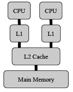
2.2 Shared Memory Applications
Shared memory applications have a single shared storage that is accessible from any CPU. The programming models common to shared memory applications include threadsn (e.g. POSIX threads, and OpenMP.
The typical performance issues with shared memory applications include limited bus bandwidth where a bottleneck occurs when many CPUs are trying to access the same resources. There can be synchronization overhead associated with thread startup. There can be problems with not balancing the workload among threads properly, or most efficiently. There can be complications with Non-Uniform Memory Access (NUMA).
2.3 Message Passing Applications
Message passing applications use a distributed memory model with sequential or shared memory nodes coupled by a network. In this case data is exchanged using message passing via a Message Passing Interface (MPI).
The typical performance issues associated with message passing applications include long blocking times while waiting on data, or low messaging rates creating bottlenecks due to insufficient network bandwidth.
3 Introduction
to Open|SpeedShop
Open|SpeedShop is an open source performance analysis tool framework. It provides the most common performance analysis steps all in one tool. It is easily extendable by writing plugins to collect and display performance data. It also comes with built in experiments to gather and display several types of performance information.
Open|SpeedShop provides several flexible and easy ways to interact with it. There is a GUI to launch and examine experiments, a command line interface that provides the same access as the GUI, as well as python scripts. There are also convenience scripts that allow you to run standalone experiments on applications and examine the results at a later time.
The existing experiments for Open|SpeedShop all work on unmodified application binaries. Open|SpeedShop has been tested on a variety of Linux clusters and supports Cray and Blue Gene systems.
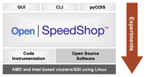3.1 Basic Concepts, Interface, Workflow
Open|SpeedShop has three ways for the user to examine the results of a performance test, called experiments, a GUI, a command line interface or through python libraries. The user can also start experiments by using those three options or by an additional method of the command line launched convenience scripts. For example to launch one of the convenience scripts for the pcsamp experiment (Program Counter Sampling) the user executes the command osspcsamp "<application>", where <application> is the executable under study along with any arguments. The convenience scripts will then create a database for the results of that experiment.
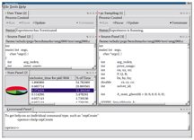
The user can examine any database in the GUI with the command:
openss -f <db file>
The GUI will proved some simple graphics to help you understand the results and will relate the data back to the source code when possible.
3.1.1 Common Terminology
Technical
terms
can have multiple and/or context sensitive meanings, therefore
this section attempts to explain and clarify the meanings of
the terms used in this document, especially with respect to
the Open|SpeedShop tools.
Experiment:
A set of collectors and executables bound together to generate
performance information that can be viewed in human readable
form.
Focused Experiment:
The current experiment commands operate on. The user may run
or view multiple experiments simultaneously and unless a
particular experiment is specified directly, the focused
experiment will be used. Experiments are given an enumeration,
called an experiment id, for identification.
Component(s):
A component is a somewhat self-contained code section of the Open|SpeedShop
performance tool. This section of code does a set
of specific related tasks for the tool. For
example, the GUI component does all the tasks related to
displaying Open|SpeedShop
wizards, experiment creation, and results using a graphical
user interface. The CLI component does similar
functions but uses the interactive command line delivery
method.
Collector:
The portion of the tool containing logic that is responsible
for the gathering of the performance metric.
A collector is a portion of the code that is included in the
experiment plugin.
Metric:
The measurement, which the collector/experiment is
gathering. A metric could be a time, an occurrence counter,
or other entity, which reflects in some way on the
application�s performance and is gathered by a performance
experiment at application runtime directly by the collector.
Offline: A link override
mechanism that allows for gathering performance data using
libMonitor to link Open|SpeedShop performance data gathering
software components into the user application. For the
Open|SpeedShop offline mode of operation, the application must
be run from start up to completion. The performance
results may be viewed after the application terminates
normally.
Param:
Each collector allows the user to set certain values that
control the way a collector behaves. The parameter or param
may cause the collector to perform various operations at
certain time intervals or it may cause a collector to measure
certain types of data. Although Open|SpeedShop
provides a standard way to set a parameter, it is up to the
individual collector to decide what to do with that
information. Detailed documentation about the available
parameters is part of the collector's documentation.
Framework:
The set of API functions that allows the user interface to
manage the creation and viewing of performance
experiments. It is the interface between the user
interface and the cluster support and dynamic instrumentation
components.
Plugin:
A portion (library) of the performance tool that can be loaded
and included in the tool at tool start-up time.
Development of the plugin uses a tool specific interface (API)
so that the plugin, and the tool it is to be included in, know
how to interact with each other. Plugins are
normally placed in a specific directory so that the tool knows
where to find the plugins.
Target:
This
is the application or part of the application one is running
the experiment on. In order to fine tune what is being
targeted, Open|SpeedShop
gives target options that describes file names, host names,
thread identifiers, rank identifiers and process identifiers.
3.1.2 Concept of an Experiment
Open|SpeedShop uses the concept of an experiment to describe the gathering of performance measurement data for a particular performance area of interest. Experiments consist of the collector responsible for the gathering of the measurements associated with the performance area of interest. The collector, which is a small dynamic or static object library, also contains functions that can interpret the gathered measurements, i.e., performance data, into a human understandable form. The experiment definition also includes the application being examined and how often the data will be gathered (the sampling rate). The application�s symbol information is saved into the experiment output file so that performance reports can be generated from the performance data file alone. The application, itself, need not be present to view the performance data at a later time.
3.2 Performance Experiments Overview
Open|SpeedShop refers to the different performance measurements as experiments. Each experiment can measure and analyze different aspects of the code�s performance. The experiment type, or type of data gathered, is chosen by the user. Any experiment can be applied to any application, with the exception of MPI specific experiments being applied to non-MPI applications.
Each experiment consists of collectors and views. The collectors define specific performance data sources, for example, program counter samples, call stack samples, hardware counters or tracing of library routines. Views specify how the performance data is aggregated and presented to the user. It is possible to implement multiple collectors per experiment.
3.2.1 Individual Experiment Descriptions
The following table provides a quick overview of the different experiment types that come with Open|SpeedShop.
|
Experiment
|
Experiment
Description |
|
pcsamp |
Periodic
sampling the program counters gives a low-overhead
view of where the time is being spent in the user
application. |
|
usertime |
Periodic
sampling the call path allows the user to view
inclusive and exclusive time spent in application
routines. It
also allows the user to see which routines called
which routines. Several
views are available, including the "hot" path. |
|
hwc |
Hardware
events (including clock cycles, graduated
instructions, instruction and data cache and TLB
misses, floating-point operations) are counted at the
machine instruction, source line and function levels. |
|
hwcsamp |
Similar
to hwc, except that sampling is based on time, not
PAPI event overflows. Up
to six events may be sampled during the same
experiment. |
|
hwctime |
Similar
to hwc, except that call path sampling is also
included.
|
|
io |
Accumulated
wall-clock durations of input/output (I/O) system
calls: read, readv, write, writev, open, close, dup, pipe, creat
and others.
Show call paths for each unique I/O call path. |
|
iop* |
Lightweight I/O profiling: Accumulated
wall-clock durations of I/O system calls: read, readv,
write, writev, open, close, dup, pipe, creat
and others, but individual call information is not
recorded. |
|
iot |
Similar
to io, except that more information is gathered, such
as bytes moved, file names, etc. |
|
mpi |
Captures
the time spent in and the number of times each MPI
function is called. Show
call paths for each MPI unique call path. |
|
mpit |
Records
each MPI function call event with specific data for
display using a GUI or a command line interface (CLI). Trace format
option displays the data for each call, showing its
start and end times. |
|
mpiotf |
Write
MPI calls trace to Open Trace Format (OTF) files to
allow viewing with Vampir or converting to formats of
other tools. |
|
fpe |
Find
where each floating-point exception occurred. A trace
collects each with its exception type and the call
stack contents. These measurements are exact, not
statistical. |
|
mem* |
Captures
the time spent in and the number of times each memory
function is called. Show
call paths for each memory function�s unique call path |
|
pthreads* |
Captures
the time spent in and the number of times each POSIX
thread function is called. Show
call paths for each POSIX thread function�s unique
call path |
|
cuda* |
Captures
the NVIDIA CUDA events that occur during the
application execution and report times spent for each
event, along with the arguments for each event, in an
event-by-event trace. |
* Only
available in Open|SpeedShop using CBTF collection mechanism
(currently under development)
3.2.3 Sampling Experiments Descriptions
Program counter sampling (pcsamp) experiment, call path profiling (usertime) experiment, and the three hardware counter experiments (hwc, hwctime, hwcsamp) all use a form of sampling based performance information gathering techniques.
Program Counter Sampling (pcsamp) is used to record the Program Counter (PC) in the user application being monitored by interrupting the application at an user defined time interval, with the default being 100 times a second. This experiment provides a low overhead overview of the time distribution for the application. Its lightweight overview provides a good first step for analyzing the performance of an application.
The Call Path Profiling (usertime experiment) gathers both the PC sampling information and also records call stacks for each sample. This allows the later display of the call path information about the application as well as inclusive and exclusive timing data (see section 4.2). This experiment is used to find hot call paths (call paths that take the most time) and see who is calling whom.
The Hardware Counter experiments (hwc, hwctime, hwcsamp) access data like Cache and TLB misses. The experiments hwc and hwctime, sample a hardware counter events, based on an event threshold. The default event is PAPI_TOT_CYC overflows. Please see chapter 5 for more information on PAPI and hardware counter related experiments. Instead using a threshold, the hwcsamp experiment samples up to six events based on a sample time, similar to the usertime and pcsamp experiments. The hwcsamp experiment default events are PAPI_FP_OPS and PAPI_TOT_CYC.
3.2.4 Tracing Experiments Descriptions
The Input/Output tracing and profiling experiments (io, iot, iop), MPI Tracing Experiments (mpi, mpit, mpiotf), Memory tracing (mem), POSIX thread tracing (pthread), and the Floating Point Exception Tracing (fpe) all use a form of tracing or wrapping of the function names to record performance information. Tracing experiments do not use timers or thresholds to interrupt the application. Instead they intercept the function calls of interest by using a wrapper function that records timing and function argument information, calls the original function, and then records this information for later viewing with Open|SpeedShop�s user interface tools.
The Input/Output tracing experiments (io, iot) record invocation of all POSIX I/O events. They both provide aggregated and individual timings and, in addition, the iot experiment also provides argument information for each call. To obtain a more lightweight overview of application I/O usage, use the I/O profiling experiment. The lightweight I/O experiment (iop) records the invocation of all POSIX I/O events, accumulating the information, but does not save individual call information like the io and iot experiments do. That allows the iop experiment database to be smaller and makes the iop experiment faster than the io and iot experiments.
The memory tracing experiment (mem) records invocation of all tracked memory function calls, also referred to as events. The mem experiment provides aggregated and individual timings and also provides argument information for each call.
The MPI Tracing Experiments (mpi, mpit, mpiotf) record invocation of all MPI routines as well as aggregated and individual timings. The mpit experiment provides argument information for each call. The mpiotf experiment creates Open Trace Format (OTF) output.
The Floating Point Exception Tracing (fpe) is triggered by any FPE caused by the application. It can help pinpoint numerical problem areas.
The POSIX thread tracing experiment (pthreads) records invocation of all tracked POSIX thread related function calls, also referred to as events. The pthreads experiment provides aggregated and individual timings and also provides argument information for each call.
3.2.5 Parallel Experiment Support
Open|SpeedShop supports MPI and threaded codes; it has been tested with a variety of MPI implementations. The thread support is based on POSIX threads and OpenMP is supported through POSIX threads. Open|SpeedShop reports the activity of the POSIX threads that represent the OpenMP threads, but currently doesn�t do any special processing for OpenMP specifically.
Any Open|SpeedShop experiment can be applied to any parallel application. This means you can run the program counter sampling experiment on a non-parallel application as well as a MPI or threaded application. The experiment data collectors are automatically applied to all tasks/threads. The default views aggregate (sum the performance data) across all tasks/threads but data from individual tasks/threads are available. The MPI calls are wrapped, and MPI function elapsed time and parameter information is displayed.
3.3 Running an Experiment
First think about what parameters you want to measure then choose the appropriate experiment to run. You may want to start by running the pcsamp experiment since it is a lightweight experiment and will give an overview of the timing for the entire application.
Once you have selected the experiment to run you can launch it with either the wizard in the GUI or by using the command line convenience scripts. For example say you have decided to run the pcsamp experiment on the Semi coarsening Multigrid Solver MPI application smg2000 (a good benchmark application). On the command line you would issue the command:
> osspcsamp
"mpirun -np 256 smg2000 -n 65 65 65"
Where "mpirun -np 256 smg2000 -n 65 65 65" is a typical MPI application launching command you would normally use to launch the smg2000 application. mpirun, a MPI driver script or executable, is here used to launch smg2000 on 256 processors with "-n 65 65 65" is passed as an argument to smg2000. An example of a typical MPI smg2000 pcsamp experiment run along with the application and experiment output follows below:
> osspcsamp
"mpirun -np 2 smg2000 -n 65 65 65"
|
[openss]:
pcsamp experiment using the pcsamp experiment default
sampling rate: "100". [openss]:
Using OPENSS_PREFIX installed in /opt/OSS-mrnet [openss]:
Setting up offline raw data directory in
/tmp/jeg/offline-oss [openss]:
Running offline pcsamp experiment using the command: "mpirun -np
2 /opt/OSS-mrnet/bin/ossrun "./smg2000 -n 65 65 65"
pcsamp" Running with
these driver parameters: (nx, ny, nz)
= (65, 65, 65) (Px, Py, Pz)
= (2, 1, 1) (bx, by, bz)
= (1, 1, 1) (cx, cy, cz)
= (1.000000, 1.000000, 1.000000) (n_pre,
n_post) = (1, 1) dim = 3 solver ID =
0 ============================================= Struct
Interface: ============================================= Struct
Interface: wall clock
time = 0.049847 seconds cpu clock time
= 0.050000 seconds ============================================= Setup phase
times: ============================================= SMG Setup: wall clock
time = 0.635208 seconds cpu clock time
= 0.630000 seconds ============================================= Solve phase
times: ============================================= SMG Solve: wall clock
time = 3.987212 seconds cpu clock time
= 3.970000 seconds Iterations =
7 Final
Relative Residual Norm = 1.774415e-‐07 [openss]:
Converting raw data from /tmp/jeg/offline-‐oss into
temp file X.0.openss Processing
raw data for smg2000 Processing
processes and threads ... Processing
performance data ... Processing
functions and statements ... [openss]:
Restoring and displaying default view for: /home/jeg/DEMOS/demos/mpi/openmpi-‐1.4.2/smg2000/test/smg2000-‐pcsamp-‐1.openss [openss]:
The restored experiment identifier is: ‐x 1 Exclusive
CPU time
% of CPU Time Function (defining location) in
seconds. 3.630000000
43.060498221 hypre_SMGResidual (smg2000:
smg_residual.c,152) 2.860000000
33.926453144 hypre_CyclicReduction (smg2000:
cyclic_reduction.c,757) 0.280000000
3.321470937
hypre_SemiRestrict (smg2000: semi_restrict.c,125) 0.210000000
2.491103203
hypre_SemiInterp (smg2000: semi_interp.c,126) 0.150000000
1.779359431
opal_progress (libopen-pal.so.0.0.0) 0.100000000
1.186239620
mca_btl_sm_component_progress (libmpi.so.0.0.2) 0.090000000
1.067615658
hypre_SMGAxpy (smg2000: smg_axpy.c,27) 0.080000000
0.948991696
ompi_generic_simple_pack (libmpi.so.0.0.2) 0.070000000
0.830367734
__GI_memcpy (libc-‐2.10.2.so) 0.070000000
0.830367734
hypre_StructVectorSetConstantValues (smg2000:
struct_vector.c,537) 0.060000000
0.711743772
hypre_SMG3BuildRAPSym (smg2000: smg3_setup_rap.c,233) |
When the application completes a default report will be printed on screen. The performance information gathered during execution of the experiment will be stored in a database called smg2000-pcsamp.openss. You can use the Open|SpeedShop GUI to analyze the data in detail. Run the openss command to load that database file or open the file directly using the "-f" option:
> openss -f
smg2000-pcsamp.openss
Below we show basic examples of how to use the GUI to view the output database file created by the convenience script.
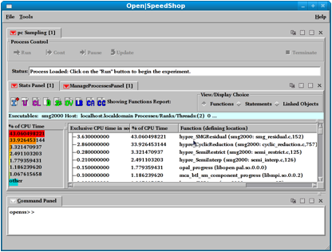
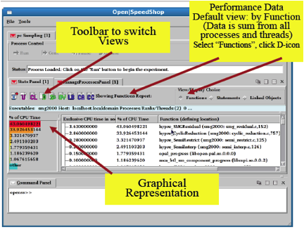
You can choose to view data for Functions, Statements or Linked Objects. To switch from one view type to another, first select the view granularity (Function, Statement, or Linked Object), then select the type of view. For the default views, select the "D" icon.
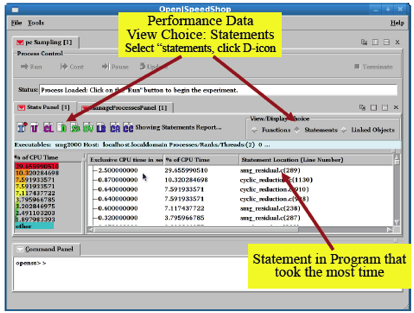
You can manipulate the windows within the GUI and double click functions or statements to see the source code directly.
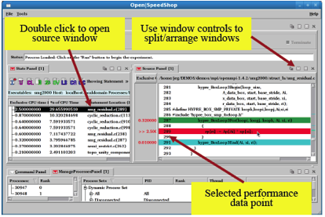
4 How to
Gather and Understand Profiles
A profile is the aggregated measurements collected during the experiment. Profiles look at code sections over time. There are advantages to using profiles since they reduce the size of performance data and typically the data is collected with low overhead. So profiles can provide a good overview of the performance of an application.
The disadvantage of using a profile is that you are required to know beforehand how to aggregate the data collected. Also, since profiles provide more of an overview, they omit the performance details of individual events. There could also be an issue where selecting an inappropriate sampling frequency could skew the results of the profile.
Statistical Performance Analysis is a standard profiling technique, it involves interrupting the execution of the application in periodic intervals to record the location of the execution (Program Counter value). It can also be used to collect additional data like stack traces or hardware counters. Again the advantage of this method is its low overhead. It is good for getting an overview of the program and finding the hotspots (time intensive areas) within the program.
4.1 Program Counter Sampling Experiment
The sampling experiments available in Open|SpeedShop include Program Counter Sampling, Call Path Profiling and Hardware Counter. The Program Counter Sampling experiment (osspcsamp) provides approximate CPU time for each line and function in the program. The Call Path Profiling experiment (ossusertime) provides inclusive vs. exclusive CPU time (see section 4.2), and also includes call stacks. There is a number of Hardware Counter experiments (osshwc, osshwctime) that sample hardware counter overflows and osshwcsamp that can periodically sample up to six hardware counter events.
A flat profile will answer the basic question: "Where does my code spend its time?". This will be displayed as a list of code elements with varying granularity, i.e. statements, functions and libraries (linked objects), with the time spent at each function. Flat profiling can be done through sampling, which allows us to avoid the overhead of direct measurements. We must ensure we request a sufficient number of samples (sampling rate) to get an accurate result.
An example of flat profiling would be running the program counter sampling in Open|SpeedShop. We will run the convenience script on our test program smg2000:
> osspcsamp
"mpirun -np 256 smg2000 -n 50 50 50"
It is recommended that you compile your code with the -g option in order to see the statements in the sampling. The pcsamp experiment also takes a sampling frequency as an optional parameter, the available parameters are high (200 samples per second), low (50 samples per second) and the default value is 100 samples per second. If we wanted to run the same experiment with the high sampling rate we would simply issue the command:
> osspcsamp
"mpirun -np 256 smg2000 -n 50 50 50" high
We can view the results of this flat profile in the Open|SpeedShop GUI by using the "openss -f <database filename>" command.
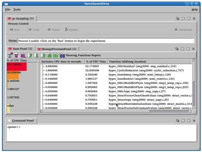
We can use this information to identify the critical regions. The profile shows computationally intensive code regions by displaying the time spent per function or per statement. While viewing this we must ask ourselves:
� "Are those the functions/statements that we expected to be taking the most time?"
� "Does this match the computational kernels?"
� "Are any runtime functions taking a lot of time?"
We want to identify any components that are bottlenecks. We can do this by viewing the profile aggregated by shared (linked) objects, making sure the correct or expected modules are present, then analyze the impact of those support and/or runtime libraries.
4.2 Call Path Profiling (usertime) Experiment
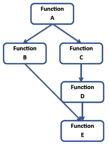The call path profiling (usertime) experiment can add some information that is missing from the flat profiles. It is able to distinguish routines called from multiple callers, and understand the call invocation history. This provides context for the performance data. It also gathers stack traces for each performance sample and only aggregates samples with equal stack traces. For the user, this simplifies the view by showing the caller/callee relationship. It can also highlight the hot call paths, the paths through the application that take the most time.
 The call path profiling
experiment also provides inclusive and exclusive time. Exclusive
time is the time spent inside a function only, for example
function B. Whereas
inclusive time is the time spend inside a function and its
children, for example the full chain of function C, D and E.
The call path profiling
experiment also provides inclusive and exclusive time. Exclusive
time is the time spent inside a function only, for example
function B. Whereas
inclusive time is the time spend inside a function and its
children, for example the full chain of function C, D and E.
The call path profiling experiment is similar to the program counter sampling experiment since it collects program counter information, except that it collects call stack information at every sample. There are, of course, tradeoffs with that, you obtain additional context information from the call stacks but there is now a higher overhead and necessarily lower sampling rate.
We can run the call path profiling experiment using the Open|SpeedShop convenience script on our test program smg2000:
> ossusertime
"mpirun -np 256 smg2000 -n 50 50 50"
Again it is recommended that you compile your code with the -g option in order to see the statements in the sampling. The usertime experiment also takes a sampling frequency as an optional parameter, the available parameters are high (70 samples per second), low (18 samples per second) and the default value is 35 samples per second. Note that these sample rates are lower then the pcsamp experiment because of the increased amount of data being collected. If we wanted to run the same experiment with the low sampling rate we would simply issue the command:
> ossusertime
"mpirun -np 256 smg2000 -n 50 50 50" low
We can view the results of this experiment in the Open|SpeedShop GUI. The view is similar to the pcsamp view but this time the inclusive CPU time is also shown.

Below we see the Exclusive CPU time on highlighted lines that indicate relatively high CPU times.

While performance tools will point out potential bottlenecks and hot areas it is still up to the user to interpret most data in the correct context as well as note areas of the code you may want to probe further. If the inclusive and exclusive times are similar this means the child executions are insignificant (with respect to CPU time) and it may not be useful to profile below this layer. If the inclusive time is significantly greater then the exclusive time then you should focus your attention to the execution times of the children.
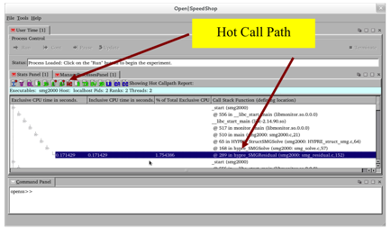
The stack trace views in Open|SpeedShop are similar to the well-known Unix profiling tool gprof.
5
How to Relate Data to Architectural Properties
So far we have been focusing mostly on timing. Timing information shows where your code spends its time by displaying hot functions/statements/libraries and hot call paths. But it doesn�t show you why it is spending so much time in those areas. You need to know if the computationally intensive parts of the code are as efficient as they can be to reduce the time spent there or if there are resources that are constraining the execution of the code. These answers can be very platform dependent. Areas of bottlenecks can differ from system to system, and portability issues can cause a drop in performance. There may be a need to tune your code based on the architectural parameters of the system. In order to do this we will investigate the interaction between the application and the hardware to make sure there is an efficient use of hardware resources.

Modern memory system are complex, they can have deep hierarchies and explicitly managed memory. Systems can implement Non-Uniform Memory Access (NUMA) or streaming/prefetching methods. The key to memory is location. Are you accessing the same data repeatedly or are you accessing neighboring data. You will want to look at your codes read/write intensity, the prefetch efficiency, the cache miss rate at all levels, TLB miss rates and the overhead from NUMA.
Some system differences can affect the computational intensity like the cycles per instruction (CPI) or the number of floating point instructions. Other architectural features that can differ between systems include branches, the number of branches taken, the miss speculation or wrong branch prediction results.
If your code is using anything like single instruction multiple data (SIMD), any type of multimedia or streaming extensions the performance of all of these things could differ greatly from system to system.
General system-wide information including I/O busses, network counters, also power or temperature sensors; all could affect the performance of your code. But it can be difficult to relate this information to your source code.
Hardware performance counters are used to keep track of architectural features. Typically most features that are packaged inside the CPU allow counting hardware events transparently without any overhead. Newer platforms also provide system counters on things like network cards and switches or environmental sensors.
The drawback to hardware counters is that their availability differs between platforms and processor types. Even systems that allow the same counters may have slight semantic differences between platforms. In some cases access to hardware counters may require privileged access or kernel patches.
Performance Application Programming Interface (PAPI) allows access to hardware counters through APIs and simple runtime tools. You can find more information on PAPI at http://icl.cs.utk.edu/papi.
Open|SpeedShop provides three hardware counter experiments that are implemented on top of PAPI. It provides access to PAPI and native counters like data cache misses, TLB misses and bus accesses.
There are a few basic models to follow in hardware counter experiments. The first is thresholding, where the user selects a counter and the application runs until a fixed number of events have been reached on that counter. Then a PC sample is taken at that location every time the counter increases by the preset fixed number. The ideal threshold, the fixed number at which to monitor, is dependent on the application. Another model is a timer based sampling where the counters are checked at given time intervals.
Open|SpeedShop provides three hardware counter experiments, hwc for flat hardware counter profiles using a single hardware counter, hwctime for profiles with stack traces using a single hardware counter and hwcsamp for PC sampling with multiple hardware counters. Both osshwc and osshwctime support non-derived PAPI presets, all non-derived events are reported by "papi_avail -a". You can also see the available events by running the experiments (osshwc or osshwctime) with no arguments. The experiments include all native events for that specific architecture. Some PAPI event names are listed in sections below, but please see the PAPI documentation for the full list.
The threshold you choose depends on the application, you want to balance overhead with accuracy. Remember a higher threshold will record less samples. Rare events need a smaller threshold or that information may be lost (never triggered and recorded). Frequent events should use a larger threshold, to reduce the overhead of collecting the information. Selecting the right threshold can take experience or some trial and error.
HINT: Running the sampling based hardware counter experiment, osshwcsamp, can help you get an idea for a threshold value to try when running the osshwc and osshwctime experiments which are threshold based. Since the ideal number of events (threshold) depends on the application and the selected counter, for events other than the default, the hwcsamp experiment can be used to get an overview of counter activity.
The default threshold is set to a very large value to match the default event (PAPI_TOT_CYC). For all other events, it is recommended that the user run hwcsamp first to get an idea of how many times a particular event occurs (the count of the event) during the life of the program. A reasonable threshold can be determined from the hwcsamp data by determining the average counts per thread of execution and then setting the hwc/hwctime threshold to some small fraction of that. For example, if you see 1333333333 PAPI_L1_DCM's over the life of the program when running the hwcsamp experiment and there were 524 processes used during the application run, the this is the formula you could use to find a reasonable threshold for the hwc and hwctime experiments when using the PAPI_L1_DCM event for the same application. So the formula that could be used is as follows:
(Average counts per thread) / 1000 == Threshold for hwc/hwctime
In this case:
(1333333333/524)/1000 == 2544529/1000 == 2545
Using this formula one could use 2545 as the threshold value in hwc and hwctime for PAPI_L1_DCM and expect to get a reasonable data sample of that event.
5.1 Hardware Counter Sampling (hwcsamp) Experiment
The osshwcsamp experiment supports both derived and non-derived PAPI presets and is able to sample up to six counters at one time. Again you can check the available counters by running osshwcsamp with no arguments. All native events are available including architecture specific events listed in the PAPI documentation. Native events are also reported by papi_native_avail.
The hardware counter sampling experiment uses a sampling rate (instead of the threshold used in the previous experiments). But like the threshold, the sampling rate is depended on the application and must be balanced between overhead and accuracy. In this case the lower the sampling rate the less samples recorded.
The convenience script for this is experiment is:
> osshwcsamp
"mpirun -np 256 smg2000 -n 50 50 50" <event_list>
<sampling_rate>
Note if a counter does not appear in the output, there may be a conflict in the hardware counters. To find conflicts use
>
papi_event_chooser PRESET <list_of_events>
Here is a list of some possible hardware counter combinations to use (list provided by Koushik Ghosh, LLNL).
|
For Xeon processors: |
|
|
PAPI_FP_INS, PAPI_LD_INS, PAPI_SR_INS |
Load store info, memory bandwidth needs |
|
PAPI_L1_DCM, PAPI_L1_TCA |
L1 cache hit/miss ratios |
|
PAPI_L2_DCM, PAPI_L2_TCA |
L2 cache hit/miss ratios |
|
LAST_LEVEL_CACHE_MISSES, LAST_LEVEL_CACHE_REFERENCES |
L3 cache info |
|
MEM_UNCORE_RETIRED:REMOTE_DRAM, MEM_UNCORE_RETIRED:LOCAL_DRAM |
Local/nonlocal memory access |
|
For Opteron processors: |
|
|
PAPI_FAD_INS, PAPI_FML_INS |
Floating point add multiply |
|
PAPI_FDV_INS, PAPI_FSQ_INS |
Square root and divisions |
|
PAPI_FP_OPS, PAPI_VEC_INS |
Floating point and vector instructions |
|
READ_REQUEST_TO_L3_CACHE:ALL_CORES, L3_CACHE_MISSES:ALL_CORES |
L3 cache |
When selecting PAPI events you must determine if they are a valid combination. In general combination that are valid will pass the test:
>
papi_event_chooser PRESET event1 event2 .. eventN
The output for a valid combination will contain:
event_chooser.c
PASSED
Here is an example using PAPI to check if a three-event combination is valid.
|
>
papi_event_chooser PRESET PAPI_FP_INS PAPI_LD_INS
PAPI_SR_INS -‐-‐-‐-‐-‐-‐-‐-‐-‐-‐-‐-‐-‐-‐-‐-‐-‐-‐-‐-‐-‐-‐-‐-PAPI
Version
:4.1.2.1 Vendor
string and code
: GenuineIntel (1) Model
string and code
: Intel Nehalem (21) CPU
Revision
: 5.000000 .. .. PAPI_VEC_SP
0x80000069 No Single precision vector/SIMD
instructions PAPI_VEC_DP
0x8000006a No Double precision vector/SIMD
instructions -‐-‐-‐-‐-‐-‐-‐-‐-‐-‐-‐-‐-‐-‐-‐-‐-‐-‐-‐-‐-‐-‐-‐-Total
events reported: 44 event_chooser.c
PASSED |
Below shows the output of the osshwcsamp experiment with the counters for Total Cycles and Floating Point Operations.
Remember that you do not always need to use the Open|SpeedShop GUI to examine the output of experiments, you can also use the command line interface to view all of the same information. For example the same output from above can be seen on the command line:
|
>
openss ‐cli ‐f smg2000‐hwcsamp‐1.openss openss>>[openss]:
The restored experiment identifier is: ‐x 1 openss>>expview Exclusive
CPU time
% of CPU Time
PAPI_TOT_CYC
PAPI_FP_OPS Function
(defining location) in seconds. 3.920000000
44.697833523
11772604888 1198486900 hypre_SMGResidual
(smg2000: smg_residual.c,152) 2.510000000
28.620296465
7478131309
812850606 hypre_CyclicReduction (smg2000:
cyclic_reduction.c, 757) 0.310000000
3.534777651
915610917
48863259
opal_progress (libopen-pal.so.0.0.0) 0.300000000
3.420752566
910260309
100529525 hypre_SemiRestrict (smg2000:
semi_restrict.c,125) 0.290000000
3.306727480
874155835
48509938
mca_btl..ress (libmpi.so.0.0.2) openss>>expview
‐v linkedobjects Exclusive
CPU time
% of CPU Time
PAPI_TOT_CYC
PAPI_FP_OPS LinkedObject in seconds. 7.710000000
87.315968290
22748513124
2396367480
smg2000 0.610000000
6.908267271
1789631493
126423208
libmpi.so.0.0.2 0.310000000
3.510758777
915610917
48863259
libopen-pal.so.0.0.0 0.200000000
2.265005663
521249939
46127342
libc-2.10.2.so 8.830000000
100.0
25975005473
2617781289
Report Summary openss>> |
|
|
5.1.1 Hardware Counter Sampling (hwcsamp) experiment performance data gathering
The hardware counter sampling experiment convenience script is "osshwcsamp". Use this convenience script in this manner to gather counter values for unique up to six (6) hardware counters:
osshwcsamp "how you normally run your application" <papi event list> < sampling rate>
5.1.1.1 Hardware Counter Sampling (hwcsamp) experiment parameters
The hwcsamp experiment is timer based not threshold based. What that means is a timer is used to periodically interrupt the processor. For the hwcsamp experiment, each time the timer interrupts the processor, the values of the hardware counter events specified will be read up and reset to 0 for the next timer cycle. This is repeated until the program finishes. Open|SpeedShop allows the user to control the sampling rate.
The following is an example of how to gather
data for the smg2000 application on a Linux cluster platform
using the osshwcsamp convenience script and specifying a
specific set of PAPI hwc events. In the next example the user is
choosing to only sample 45 times a second instead of the default
100 times a second. Why
would you want to do this?
One reason would be to save database size, a lower
sampling rate may give an accurate portrayal of the application
behavior.
> osshwcsamp
"mpirun -np 256 smg2000 -n 50 50 50" PAPI_L1_DCM,PAPI_L2_DCA,PAPI_L2_DCM,PAPI_L3_DCA,PAPI_L3_TCM
> osshwcsamp
"mpirun -np 256 smg2000 -n 50 50 50" PAPI_L1_DCM,PAPI_L2_DCA,PAPI_L2_DCM
45
5.1.2 Hardware Counter Sampling (hwcsamp) experiment performance data viewing with GUI
To launch the GUI on any experiment, use "openss -f <database name>".
5.1.2.1 Getting the PAPI counter as the GUIs Source Annotation Metric
In order to make one of the PAPI or native hardware counters the counter that will show up in the source view, one can click on the "SA" icon, which represents Source Annotation. This brings up an option dialogue that allows you to chose the source annotation metric.
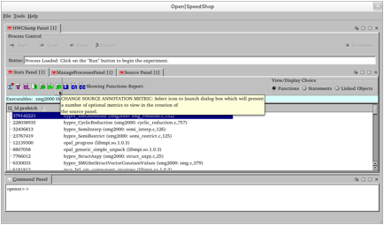
In this example the native counter we want to choose is L2_LD_PREFETCH. When we click to choose that counter and click on "OK" the Stats Panel view will regenerate and the source annotation metric will become L2_LD_PREFETCH.
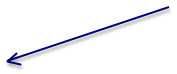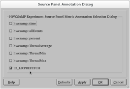
The regenerated view now shows the results for only L2_LD:PREFETCH.

Now double clicking on the Stats Panel result line of choice will focus the source panel and use the PAPI or native counter that was chosen by using the Source Annotation dialog.

5.1.2.2 Viewing Hardware Counter Sampling Data with the GUI
To launch the GUI on any experiment, use "openss -f <database name>".
The GUI view below represents an example of the default view for the hardware counter sampling (hwcsamp) experiment. In the default view the first set of performance data shown is program counter exclusive time (where the program is statistically spending its time) and the percentage of time spent in each function of the program. The next information is the hardware counter event counts listed in columns by the hardware counter event. Column three represents the counts that were recorded for PAPI_TOT_CYC and column four represents the counts for PAPI_FP_OPS. What this view can indicate to the viewer is whether or not the specified hardware counter events are occurring and if they are, then how prevalent are they. With this information the user could isolate down to see exactly where a particular event is occurring by using the hwc or hwctime experiment These two experiments are threshold based. Which ultimately means you can map the performance data back to the source because the actual event triggered the recording of the counts of the event. This experiment, hwcsamp, is timer based, so Open|SpeedShop cannot take you exactly to the line of source where the hwc events are happening. hwcsamp is more of an overview experiment that tells the user which events are occurring to subsequently use hwc or hwctime to pinpoint where in the source the specified hardware counter event is occurring.
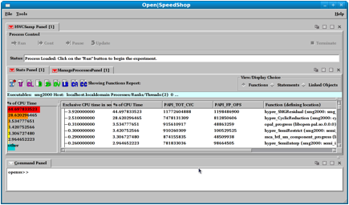
5.1.3 Hardware Counter Sampling (hwcsamp) experiment performance data viewing
To launch the CLI on any experiment, use "openss -cli -f <database name>". The following example was run on the Yellowstone platform at NCAR/UCAR using the job script shown below.
5.1.3.1 Job Script and osshwcsamp command
#!/bin/csh
#
# LSF batch
script to run an MPI application
#
#BSUB -P
Pnnnnnnnn
# project code
#BSUB -W
00:30
#
wall-clock time (hrs:mins)
#BSUB -n 64
# number of tasks in job
#BSUB -R
"span[ptile=4]" # run 4 MPI tasks per node
#BSUB -J
sweep3d-hwcsamp
#
job
name
#BSUB -o
sweep3d-hwcsamp.%J.out
# output file name
in which %J is replaced by the job ID
#BSUB -e
sweep3d-hwcsamp.%J.err
# error file name in
which %J is replaced by the job ID
#BSUB -q
regular
#
queue
module load
openspeedshop
mkdir -p
/glade/scratch/${USER}/sweep3d
rm -rf
/glade/scratch/${USER}/sweep3d/hwcsamp
mkdir
/glade/scratch/${USER}/sweep3d/hwcsamp
setenv
OPENSS_RAWDATA_DIR /glade/scratch/${USER}/sweep3d/hwcsamp
setenv
REQUEST_SUSPEND_HPC_STAT 1
echo
"running (on compute node): osshwcsamp"
osshwcsamp
"mpirun.lsf
/glade/u/home/galaro/demos/sweep3d/orig/sweep3d.mpi"
PAPI_L1_DCM,PAPI_L1_ICM,PAPI_L1_TCM,PAPI_L1_LDM,PAPI_L1_STM
5.1.3.2 osshwcsamp experiment CLI Default view
openss -cli -f
L1-64PE-sweep3d.mpi-hwcsamp.openss
openss>>[openss]:
The restored experiment identifier is: -x 1
openss>>expview -v summary
Exclusive
% of CPU papi_l1_dcm papi_l1_icm
papi_l1_tcm papi_l1_ldm papi_l1_stm Function
(defining location)
CPU time in Time
seconds.
824.870000
38.689781 8646497071
117738843 8764235914 8396159476
196649065 __libc_poll (libc-2.12.so)
799.300000
37.490443 46691996441 367096209
47059092650 46247555479 281624221
sweep (sweep3d.mpi: sweep.f,2)
75.000000
3.517807 782716992
10680760
793397752 757322217
20159725
PAMI::Interface::Context<PAMI::Context>::advance
(libpami.so: ContextInterface.h,158)
55.750000
2.614903
597583047 8038242
605621289 579127274
14647999
LapiImpl::Context::Advance<true, true, false>
(libpami.so: Context.h,220)
52.970000
2.484510 550761926
7569975 558331901
535841812 11563657
__libc_enable_asynccancel (libc-2.12.so)
49.850000
2.338169 518605433
6979361 525584794
502551336 12757207
_lapi_dispatcher<false> (libpami.so:
lapi_dispatcher.c,57)
48.080000
2.255149 488545916
6784192 495330108
476065093 9649598
LapiImpl::Context::TryLock<true, true, false>
(libpami.so: Context.h,198)
47.750000
2.239671 479947719
6732551 486680270
471343480 6436257
__libc_disable_asynccancel (libc-2.12.so)
26.680000
1.251401 275998769
3888499 279887268
269841454 4697170
udp_read_callback (libpamiudp.so: lapi_udp.c,538)
25.880000
1.213878 1522697263
12118336 1534815599 1507685061
9619348 __intel_ssse3_rep_memcpy
(libirc.so)
21.960000
1.030014 223197680
3086626 226284306
215787794 5879517
_lapi_shm_dispatcher (libpami.so: lapi_shm.c,2283)
14.910000
0.699340 154744623
2075688 156820311
149803306 3979337
LapiImpl::Context::CheckContext (libpami.so:
CheckParam.cpp,21)
13.990000
0.656188 151052863
2000330 153053193
146967548 3167039
LapiImpl::Context::Unlock<true, true, false>
(libpami.so: Context.h,204)
5.1.3.2 osshwcsamp experiment CLI Status command and view
openss>>expstatus
Experiment
definition
{ # ExpId is 1,
Status is NonExistent, Saved database is
L1-64PE-sweep3d.mpi-hwcsamp.openss
Performance
data spans 1:7.958138 mm:ss from 2013/03/27 22:32:45 to
2013/03/27 22:33:53
Executables
Involved:
sweep3d.mpi
Currently
Specified Components:
-h
ys6128 -p 2765 -t 47176895393312 -r 3 (sweep3d.mpi)
-h
ys6128 -p 2766 -t 47824321252896 -r 0 (sweep3d.mpi)
-h
ys6128 -p 2767 -t 47369830317600 -r 1 (sweep3d.mpi)
-h
ys6128 -p 2768 -t 47378742910496 -r 2 (sweep3d.mpi)
-h
ys6129 -p 22862 -t 47327259860512 -r 5 (sweep3d.mpi)
-h
ys6129 -p 22863 -t 47201888194080 -r 6 (sweep3d.mpi)
-h
ys6129 -p 22864 -t 47185544437280 -r 7 (sweep3d.mpi)
..
-h
ys6250 -p 11462 -t 47028080107040 -r 63 (sweep3d.mpi)
-h
ys6250 -p 11463 -t 47600632852000 -r 60 (sweep3d.mpi)
-h
ys6250 -p 11464 -t 47494028697120 -r 61 (sweep3d.mpi)
-h
ys6250 -p 11465 -t 47944527175200 -r 62 (sweep3d.mpi)
Previously
Used Data Collectors:
hwcsamp
Metrics:
hwcsamp::exclusive_detail
hwcsamp::percent
hwcsamp::threadAverage
hwcsamp::threadMax
hwcsamp::threadMin
hwcsamp::time
Parameter
Values:
hwcsamp::event
= PAPI_L1_DCM,PAPI_L1_ICM,PAPI_L1_TCM,PAPI_L1_LDM,PAPI_L1_STM
hwcsamp::sampling_rate
=
100
Available
Views:
hwcsamp
}
5.1.3.3 osshwcsamp experiment CLI Load Balance command and view
openss>>expview -m loadbalance
Max CPU
Rank Min CPU Rank
Average Function (defining location)
Time
of
Time of
CPU Time
Across
Max Across Min
Across
Ranks(s)
Ranks(s)
Ranks(s)
14.890000
28 10.950000 27
12.888594 __libc_poll (libc-2.12.so)
14.270000
47 11.780000 51
12.489062 sweep (sweep3d.mpi: sweep.f,2)
1.620000
43 0.840000 37
1.171875
PAMI::Interface::Context<PAMI::Context>::advance
(libpami.so: ContextInterface.h,158)
1.320000
16 0.570000
3 0.871094
LapiImpl::Context::Advance<true, true, false>
(libpami.so: Context.h,220)
1.130000
60 0.500000
2 0.778906
_lapi_dispatcher<false> (libpami.so:
lapi_dispatcher.c,57)
1.110000
35 0.520000 49
0.751250 LapiImpl::Context::TryLock<true, true,
false> (libpami.so: Context.h,198)
1.030000
42 0.600000 12
0.827656 __libc_enable_asynccancel (libc-2.12.so)
0.950000
62 0.520000 38
0.746094 __libc_disable_asynccancel (libc-2.12.so)
0.700000
6 0.200000
59 0.343125
_lapi_shm_dispatcher (libpami.so: lapi_shm.c,2283)
0.630000
33 0.250000
0 0.404375
__intel_ssse3_rep_memcpy (libirc.so)
0.600000
18 0.270000 16
0.416875 udp_read_callback (libpamiudp.so:
5.1.3.4 osshwcsamp experiment CLI Linked Object command and view
openss>>expview -v
linkedobjects
Exclusive
% of CPU papi_l1_dcm papi_l1_icm
papi_l1_tcm papi_l1_ldm papi_l1_stm
LinkedObject
CPU time in Time
seconds.
928.310000
43.541541 9818946796
133244862 9952191658 9543597734
215608918 libc-2.12.so
811.920000
38.082373 47212355914 369525459
47581881373 46596204924 441601622
sweep3d.mpi
311.490000
14.610157 3356646038
44875637
3401521675 3255300343
80090932
libpami.so
29.640000
1.390237
1824778610 12931604
1837710214 1680978945
127174346
libirc.so
26.930000
1.263127
287313329
3994016 291307345 281053971
4763152
libpamiudp.so
22.250000
1.043616
1049603690 9037920
1058641610
1033650896
11422120 libpthread-2.12.so
1.440000 0.067542
72649683 620083
73269766 71327993
1007704 libmpich.so.3.3
0.020000
0.000938
1286256
23770
1310026 1232178
5222 ld-2.12.so
0.010000
0.000469
327
394 721
313
13 librt-2.12.so
2132.010000
100.000000 63623580643 574253745
64197834388 62463347297 881674029
Report Summary
openss>>
5.2 Hardware Counter Experiment (hwc)
As an example we will run the osshwc experiment on our test program smg2000. The convenience script for this is experiment is:
> osshwc "mpirun -np 256 smg2000 -n 50 50 50" <counter> <threshold>
This is the same syntax as the osshwctime experiment. Note that if your output is empty, try lowering the <threshold> value, it is calculated by Open|SpeedShop by default. You can try lowering the threshold value if there have not been enough PAPI event occurrences to record. Also see the HINT in the osshwcsamp section above. You can run osshwcsamp and use a formula to create a reasonable threshold. Any counter reported by "papi_avail -a" that is not derived is available for use. You can also see the available counters by using the osshwc or osshwctime commands with no arguments. Native counters are listed in the PAPI documentation.

Note the Threshold indications are just for rough guidance and are dependent on the application. Also remember that not all counters will exist on all platforms, run osshwc with no arguments to see the available hardware counters available.
In the sections below, we show the outputs from the osshwc experiment, note that the default counter is the total cycles.
5.2.1 Hardware Counter Threshold (hwc) experiment performance data gathering
The hardware counter threshold experiment convenience script is "osshwc". Use this convenience script in this manner to gather counter values for one unique hardware counter:
osshwc "how you normally run your application" <papi event > < threshold value>
tbd
5.2.2 Hardware Counter Threshold (hwc) experiment performance data viewing with GUI
To launch the GUI on any experiment, use "openss -f <database name>".
This image shows the default view for the hwc experiment run with the smg2000 MPI application using PAPI_TOT_CYC as the hardware counter event. Double clicking on a line in the Stats Panel or on the bar chart will take the user to the source file and line represented by that line of performance information.
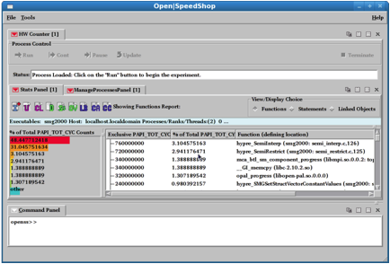
The next image displays the output from the osshwctime experiment where the counter is the L1 cache misses.
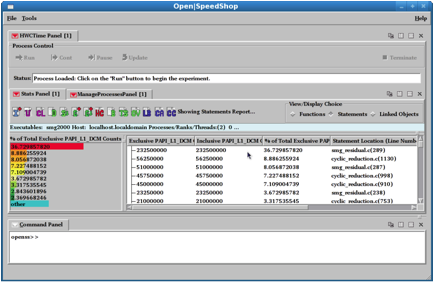
5.2.3 Hardware Counter Threshold (hwc) experiment performance data viewing with CLI
To launch the CLI on any experiment, use "openss -cli -f <database name>".
6 Hardware
Performance Counters and Their Use
In this section we will explore the importance of simple Hardware Counter Metrics (HCM) through some easy to understand examples. We will also use a simple Matrix multiplication example to illustrate performance optimization.

The Memory Pyramid illustrates the impact of memory on the performance of an application. The closer the memory is to the CPU the faster, and smaller, it will be. Memory further away from the CPU is slower but larger. The most expensive operation is moving data. The application can only do useful work on the data at the top of the pyramid. For a given algorithm, serial performance is all about maximizing CPU flop rate and minimizing memory operations in scientific code. The table below shows the access latencies in clock cycles for the Nehalem Intel processor.
|
Memory |
Access latency in
clock cycles |
|
L1 |
4 |
|
L2 |
9 |
|
L3 |
47 |
|
Main local NUMA |
81 |
|
Main non-local NUMA |
128 |
The following example uses BLAS operations to illustrate the impact of moving data. BLAS operations are Basic Linear Algebra Subprograms that proved library function calls for vectors and matrices. We use the Flops/Ops to understand how sections of the code relate to simple memory access patterns as typified by these BLAS operations. The following table show the number of Flops/Ops for each operation, where A, B and C are NxN Matrices; x and y are Nx1 Vectors; and k is a Scalar.
|
Level |
Operation |
# Memory Refs or Ops |
# Flops |
Flops/Ops |
Comments on Flops/Ops |
|
1 |
y = kx + y |
3n |
2n |
2/3 |
Achieved in Benchmarks |
|
2 |
y = Ax + y |
n2 |
2n2 |
2 |
Achieved in Benchmarks |
|
3 |
C = AB + C |
4n2 |
2n3 |
n/2 |
Exceeds HW MAX |
Below is an example of the BLAS Level 1 using the experiment osshwc (or osshwcsamp) to get the following PAPI counters: PAPI_FP_OPS, PAPI_TOT_CYC, PAPI_LD_INS, PAPI_ST_INS, PAPI_TOT_INS. Where the derived metrics of interest are: GLOPS (Giga Logical Operations per Second), Float_ops/cycle, Instructions/cycle, Loads/Cycle, Stores/Cycle, and Flops/memory Ops.
|
BLAS
1 Kernel: DAXPY; y = alpha * x + y |
|
|
Kernel
Code: |
(n=10,000)
looped 1000,000 times for timing purposes do i
= 1, n y(i)
= alpha * x(i) + y(i) enddo |
The following table shows the PAPI data for this example:
|
n |
Mem
Ref=3n |
FLOPS
Calc |
Loop
BLAS code |
PAPI_LD_INS |
PAPI_SR_INS |
PAPI_FP_OPS |
PAPI_TOT_CYCLE |
PAPI_TOT_INS |
|
10000 |
30000 |
20000 |
100000 |
1.02E+09 |
5.09E+08 |
1.03E+09 |
2.04E+09 |
2.43E+09 |
|
Code
time sec |
Code
GFLOPS |
FPC |
IPC |
LPC |
SPC |
|
6.4596E-06 |
3.096124 |
0.505386876 |
1.190989226 |
0.500489716 |
0.249412341 |
|
Error
PAPI FLOPS |
Error
corrected FLOPS |
Error
Mem Refs |
PAPI_GLOPS |
PAPI
FLOPS/OPS |
Calc
FLOPS/OPS |
|
-93.80% |
3.10% |
-2.15% |
3.195244288 |
0.673937178 |
0.6666667 |
The processors used in this example have a Floating Multiply-Add (FMADD) instruction set. Although this instruction performs two Floating Point operations, it is counted as one Floating Point instruction in PAPI. Because of this, there are situations where PAPI_FP_INS may produce fewer Floating Point counts then expected. In this example PAPI_FP_OPS was multiplied by 2 to match the theoretical, expected FLOP count. The formula for calculating Load Instructions was:
(2 vectors)*(vec_lecth)*(loop)*(bytes_per_word)*(8 bits_per_byte)/(128 bits_per_load)
What can the Hardware Counter Metrics tell us about the code performance? The set of useful metrics that can be calculated for functions are:
|
FLOPS/Memory Ops (FMO) |
We would like this to be large which would imply good data locality. (Also called Computational Intensity or Ops/Refs) |
|
FLOPS/Cycle (FPC) |
Large values for floating point intensive codes suggests efficient CPU utilization. |
|
Instructions/Cycle (IPC) |
Large values suggest good balance with minimal stalls. |
|
Loads/Cycle (LPC) |
Useful for calculating FMO, may indicate good stride through arrays. |
|
Stores/Cycle (SPC) |
Useful for calculating FMO, may indicate good stride through arrays. |
|
BLAS |
Operation |
Kernel |
PAPI_GFLOPS |
FMO |
FPC |
IPC |
LPC |
SPC |
|
1 |
y=alpha*x+y |
do
loop |
0.67 |
0.67 |
0.51 |
1.19 |
0.50 |
0.25 |
|
2 |
y=A*x+y |
do
loop |
0.94 |
2.00 |
0.14 |
0.26 |
0.07 |
0.00 |
|
2 |
y=A*x+y |
DGEMV |
1.89 |
|
0.29 |
0.42 |
0.15 |
0.03 |
|
3 |
C=A*B+C |
do
loop(kji) |
6.29 |
|
0.87 |
1.74 |
0.21 |
0.00 |
|
3 |
C=A*B+C |
DGEMM |
12.96 |
|
1.84 |
1.26 |
0.59 |
0.01 |
The following table shows single CPU simple code Hardware Counters for simple math kernels using the AMD Budapest Processor. Other hwc metrics that are useful are also shown.
|
Code |
3D
Fast Fourier Transforms; 256x256x256 |
Matrix
Multiplication 500x500 |
QR
Factorization N =
2350 |
HPCCG
(linear system solver); sparseMV; 100x100x100 |
|
Computational
Intensity; Ops/Ref |
1.33 |
1.71 |
1.68 |
0.64 |
|
MFLOPS/papi |
952 |
4159 |
3738 |
352 |
|
MFLOPS
code |
1370 |
4187 |
4000 |
276 |
|
Percent
peak |
19.8 |
86.7 |
77.9 |
7.3 |
|
fpOps/TLB
miss |
841.6515146 |
9040759.488 |
697703.964 |
14.05636016 |
|
fpOps/D1
cache miss |
25.5290058 |
167.9364898 |
144.9081716 |
10.24364227 |
|
fpOps/DC_MISS |
29.42427018 |
170.5178224 |
149.9578195 |
11.1702481 |
|
Ops/cycle |
0.4 |
1.75 |
1.56 |
0.15 |
6.1 Using the Hardware counter experiments to find bottlenecks
6.1.1 How to find memory bandwidth bottlenecks using O|SS hwc experiments
TBD
6.1.2 How to find memory cache usage issues using O|SS hwc experiments
TBD
6.1.3 How to find load/store imbalance using O|SS hwc experiments
TBD
7 I/O Tracing
and I/O Profiling
I/O could be a significant percentage of the execution time for an application and can depend on many things including Checkpoints, analysis output, visualization and I/O frequencies. The I/O pattern in the application also matters, whether it is N-to-1 or N-to-N and if there are simultaneous read or write requests. Certainly the nature of the application is also important to the I/O usage, if it is data intensive, traditional HPC with scalable data or out-of-core, that is, an application that works on data that is larger then the available system memory. The type of file system and striping available on the cluster: NFS, Lustre, Panasas or other Object Storage Targets (OSTs). What I/O libraries your code is using MPI-IO, hdf5, PLFS or others. Also the I/O is dependent on other jobs that are running and stressing the I/O sub-systems.
The obvious thing to explore first while tuning your code is to try and use a parallel file system. Then optimize your code for I/O patterns. Match checkpoint I/O frequency to Mean Time Before Interrupt (MTBI) of the system. Make sure your code is using the appropriate libraries.
7.1 OOCORE Example
We will examine an example using the benchmarking application OOCORE, an out-of-core solver, from the Department of Defense High Performance Computing Modernization Program (DoD HPCMP). It is an out-of-core ScaLAPACK (Scalable LAPACK) benchmark from the University of Tennessee, Knoxville (UTK). It can be configured to be disk I/O intensive. It characterizes a very important class of HPC applications involving the use of Method of Moments (MOM) formulation for investigating electromagnetics (e.g. radar cross-section, antenna design). It solves dense matrix equations by LU (lower triangular, upper triangular), QR or Cholesky decomposition.
OOCORE is used by HPCMP to evaluate I/O system scalability. For our needs this application or similar out-of-core dense solver benchmarks help to point out the important points in performance analysis like I/O overhead minimization. The use of Matrix Multiply kernel which makes it possible to achieve close to peak performance of the machine if tuned well. It can highlight "blocking" which is very important to tune for deep memory hierarchies.
The following example was run on 16 cores on a Quad-Core, Quad-Socket Opteron IB cluster. We want to compare two different file systems, Lustre I/O with striping and NFS I/O. We use the ossio convenience script:
|
>
ossio "srun -N 1 -n 16 ./testzdriver-std" Sample
Output from Lustre run: TIME
M N MB NB NRHS P Q Fact/SolveTime Error Residual -‐-‐-‐-‐-‐-‐-‐-‐-‐-‐-‐-‐-‐-‐-‐-‐-‐-‐-‐ WALL
31000 31000 16 16 1 4 4
1842.20 1611.59 4.51E+15 1.45E+11 DEPS
= 1.110223024625157E-‐016 sum(xsol_i)
= (30999.9999999873,0.000000000000000E+000) sum|xsol_i‐x_i|
= (3.332285336962339E-‐006,0.000000000000000E+000) sum|xsol_i‐x_i|/M
= (1.074930753858819E-‐010,0.000000000000000E+000) sum|xsol_i‐x_i|/(M*eps)
= (968211.548505533,0.000000000000000E+000) From
output of two separate runs using Lustre and NFS: LU
Fact time with Lustre= 1842 secs; LU Fact time with NFS = 2655 secs |
From the final times we see there is an 813 second penalty (more than 30%) if you do not use parallel file system like Lustre! The run time difference 75% of the 813 seconds is mostly I/O: (1360 + 99) - (847 + 7) = 605 seconds.


|
NFS
Run |
Lustre
Run |
||||||
|
Min_t(sec) |
Max_t(sec) |
Avg_t(sec) |
Function
Call |
Min_t(sec) |
Max_t(sec) |
Avg_t(sec) |
Function
Call |
|
1102.380 |
1360.727 |
1261.310 |
__libc_read(/lib64/ libpthread-.5.so) |
368.898 |
847.919 |
508.658 |
__libc_read(/lib64/ libpthread-.5.so) |
|
31.192 |
99.444 |
49.018 |
__libc_write(/lib64/ libpthread-2.5.so) |
6.270 |
7.896 |
6.850 |
__libc_write(/lib64/ libpthread-2.5.so) |
7.2 Lustre Striping Commands
To set or get the Lustre file system (lfs) striping information you can use the following commands:
|
> lfs
setstripe -s (size bytes; k, M, G) -c(cout; -1 all) -i
(index; -1 round robin) <file | directory> |
Typical defaults for setstripe are -s 1M -c 4 -i -1 (usually good to try first). File striping is set upon file create.
|
>
lfs getstrip <file | directory> |
Example for getstrip is:
|
>
lfs getstrip -verbose ./oss_lfs_strip_16 | grep
stripe_count stripe_count: 16 stripe_size: 1048576 strip_offset: -1 |

Using OOCORE I/O performance and the libc_read time from Open|SpeedShop, the following graph shows the output of an I/O experiment used to identify optimal lfs striping from load balance view (max, min and avg) for 16 way parallel run).
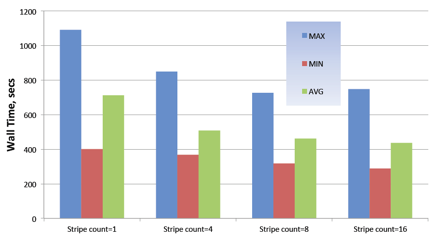
7.3 Open|SpeedShop I/O Tracing and I/O Profiling
An example of how to use the Open|SpeedShop usertime experiment to profile I/O is shown below. This example compares Open|SpeedShop data to instrumentation data.

Open|SpeedShop also has an iot experiment for extended I/O Tracing. It will record each event in chronological order, and collect additional information like function parameters and function return values. You should use the extended I/O tracing when you want to trace the exact order of events. Or when you want to see the return values or bytes that were read or written.
Beware of serial I/O in applications, illustrated in the code below (code from Mike Davis, Cray Inc.).
|
#include
<stdio.h> #include
<stdlib.h> #include
<mpi.h> #define
VARS_PER_CELL 15 /*** Write a
single restart file from many MPI processes */ int
write_restart ( MPI_Comm
comm
/// MPI communicator , int
num_cells ///
number of cells on this process , double
*cellv ///
cell vector ){ int rank;
// rank of this process within comm int size;
// size of comm int tag;
// for MPI_Send, MPI_Recv int baton;
// for serializing I/O FILE *f;
// file handle for restart file /** * Procedure: * Get MPI
parameters */ MPI_Comm_rank(comm,
&rank); MPI_Comm_size(comm,
&size); tag = 4747; if(rank ==
0) { /** * Rank 0
create a fresh restart file, * and start
the serial I/O; *write cell
data, then pass the baton to rank 1 */ f = fopen
("restart.dat", "wb"); fwrite(cellv,
num_cells, VARS_PER_CELL *sizeof (double), f); fclose(f); MPI_Send(&baton,
1, MPI_INT, 1, tag, comm); } else { /** * Ranks 1
and higher wait for previous rank to complete I/O, * then
append its cell data to the restart file, * then pass
the baton to the next rank */ MPI_Recv(&baton,
1, MPI_INT, rank ‐1, tag, comm, MPI_STATUS_IGNORE); f =
fopen("restart.dat", "ab"); fwrite(cellv,
num_cells, VARS_PER_CELL *sizeof (double), f); fclose(f); if(rank <
size ‐1) { MPI_Send(&baton,
1, MPI_INT, rank + 1, tag, comm); } } /** * All ranks
have posted to the restart file; * return to
caller */ return 0; } |
|
int
main(int argc, char *argv[]) { MPI_Comm
comm; int
comm_rank; int
comm_size; int
num_cells; double
*cellv; int
i; MPI_Init
(&argc, &argv); MPI_Comm_dup(MPI_COMM_WORLD,
&comm); MPI_Comm_rank(comm,
&comm_rank); MPI_Comm_size(comm,
&comm_size); /** *
Make the cells be distributed somewhat evenly across
ranks */ num_cells
= 5000000 + 2000 * (comm_size /2 ‐ comm_rank); cellv
= (double *) malloc (num_cells * VARS_PER_CELL *
sizeof (double)); for
(i = 0; i
< num_cells * VARS_PER_CELL; i++){
cellv[i] = comm_rank; } write_restart(comm,
num_cells, cellv); MPI_Finalize
(); return
0; } |
Below shows the output of the Open|SpeedShop iot experiment on the serial I/O code:

We can run the io or iot experiment convenience scripts on smg2000 application:
> ossio[t]
"mpirun -np 256 smg2000 -n 50 50 50" [default | <list of
I/O functions>]
Where by default the I/O function list to trace is all, the specific functions are: creat, creat64, dup, dup2, lseek, lseek64, open, open64, pipe, pread, pread64, pwrite, pwrite64, read, readv, write, writev.
Things to remember with I/O: Avoid writing to one file from all MPI tasks. If you need to do it make sure distinct offsets for each PE starts at a stripe boundary. Use buffered I/O if you must do this.
If each process writes it�s own file then the parallel file system attempts to load balance the OST taking advantage of the stripe characteristics. Meta data server overhead can often create severe I/O problems. Minimize the number of files accessed per PE and minimize each PE doing operations like seek, open, close, stat that involve inode information. I/O time is usually not measured even in applications that keep some function profile. Open|SpeedShop can shed light on time spent in I/O using the io and iot experiments.
7.3 Open|SpeedShop I/O Tracing General Usage
The Open|SpeedShop io and iot I/O function tracing experiments wrap the most common I/O functions, record the time spent in each I/O function, record the call path along which I/O function was called, record the time spent along each call path to an I/O function, and record the number of times each function was called. In addition the iot experiment also records information about each individual I/O function call. The values of the arguments and the return value from the I/O function are recorded.
7.3.1 I/O Base Tracing (io) experiment
The base I/O tracing experiment gathers data for the following I/O functions: close, creat, creat64, dup, dup2, lseek, lseek64, open, open64, pipe, pread, pread64, pwrite, pwrite64, read, readv, write, and writev. It is a trace type experiment that wraps the real I/O calls and records information before and after calling the real I/O functions. This, base, I/O experiment records the basic I/O information as stated in the introductory section, but does not record the arguments to each call. That is done in the extended (iot) experiment.
7.3.1.1 I/O Base Tracing (io) experiment performance data gathering
The base I/O tracing (io) experiment convenience script is "ossio". Use this convenience script in this manner to gather base I/O tracing performance data:
ossio "how
you normally run your application" <list of I/O
function(s)>
The following is an example of how to gather data for the IOP application on a Linux cluster platform using the ossio convenience script. It gathers performance data for all the I/O functions because there is no list I/O functions specified after the quoted application run command.
ossio
"srun -n 512 ./IOR"
7.3.1.2 I/O Base Tracing (io) experiment performance data viewing with CLI
To launch the CLI on any experiment, use "openss -cli -f <database name>".
7.3.1.3 I/O Base Tracing (io) experiment performance data viewing with GUI
To launch the GUI on any experiment, use "openss -f <database name>".
7.3.2 I/O Extended Tracing (iot) experiment
7.3.2.1 I/O Extended Tracing (iot) experiment performance data gathering
The extended I/O tracing (iot) experiment convenience script is "ossiot". Use this convenience script in this manner to gather extended I/O tracing performance data:
ossiot "how
you normally run your application" <list of I/O
function(s)>
The following is an example of how to gather data for the IOP application on a Linux cluster platform using the ossiot convenience script. It gathers performance data for all the I/O functions because there is no list I/O functions specified after the quoted application run command.
ossiot
"srun -n 512 ./IOR"
7.3.2.2 I/O Extended Tracing (iot) experiment performance data viewing with GUI
To launch the GUI on any experiment, use "openss -f <database name>".
This is the default GUI view for the iot experiment. This view give a summary of the I/O functions that were called, how many times they were called and the amount of time spent in each function. The percentage of the total I/O time is also attributed to each I/O function. The time is aggregated (totaled) across all the threads, ranks, or processes that were part of the application. The functions that called the I/O functions are available by choosing one of the call path views.
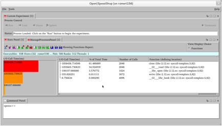
Here the user has chosen the C+ view icon and the Stats Panel now shows all the call paths in the users application. This view shows the every possible call paths through the source to all the I/O functions that were called during the execution of this application. From this one could validate that this is expected behavior and if not find where the I/O in this application is not behaving as expected.

This view is the load balance view, which
gives the min, max, average values for the I/O function call
time across all the ranks in this application. In this view we are
seeing some wide ranges between the min and max values for some
of the I/O functions. It
may be useful to see if we can identify the ranks by using the
Cluster Analysis view. 
This view, generated by choosing CA icon, the shows that there are two groups of ranks where the I/O is performing in similar manner. For group 2 (labeled -c 3 below), there are two ranks where the rest of the 512 ranks perform like group 1 (labeled -c 2 below). Investigation by examining ranks 312 or 317 by comparing it to one of the ranks in the other group could shed some light on why group 2 is not similar to the rest. This may or may not be significant, but is here for illustration.
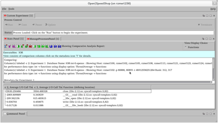
7.3.2.3 I/O Extended Tracing (iot) experiment performance data viewing with CLI
To launch the CLI on any experiment, use "openss -cli -f <database name>".
The command line interface (CLI) can provide the same data options as the graphical user interface (GUI) views. Here are some examples of the performance data that can be viewed and the commands in order to generate the CLI views.
>openss
-cli -f IOR-iot-0.openss
openss>>[openss]:
The restored experiment identifier is: -x 1
openss>>expview
I/O Call
% of Number Function (defining
location)
Time(ms)
Total
of
Time Calls
1858436.714506 61.486889 2048 close (libc-2.12.so:
syscall-template.S,82)
1055603.730633 34.924939 2048 __GI___read
(libc-2.12.so: syscall-template.S,82)
108107.666680 3.576772 1024 __libc_open
(libc-2.12.so: syscall-template.S,82)
335.820251 0.011111 3072 write (libc-2.12.so:
syscall-template.S,82)
8.756634 0.000290 4096 __GI___libc_lseek
(libc-2.12.so: syscall-template.S,82)
openss>>expview -m loadbalance
Max I/O Rank Min
I/O Rank Average I/O Function (defining
location)
Call Time
of Call
Time of Call
Time
Across Max
Across Min
Across
Ranks(ms)
Ranks(ms)
Ranks(ms)
4114.522156 509 2680.653110 273 3629.759208 close (libc-2.12.so:
syscall-template.S,82)
2824.349452 346 0.315392 317 2061.726036 __GI___read
(libc-2.12.so: syscall-template.S,82)
989.579445 358 5.784552 414 211.147786 __libc_open
(libc-2.12.so: syscall-template.S,82)
4.574762 65 0.424622 494 0.655899 write (libc-2.12.so:
syscall-template.S,82)
0.044708 184 0.011079 317 0.017103 __GI___libc_lseek
(libc-2.12.so: syscall-template.S,82)
openss>>expview -v
calltrees,fullstack
I/O Call
% of Number Call Stack Function
(defining location)
Time(ms)
Total
of
Time Calls
_start (IOR)
> @ 562 in __libc_start_main (libmonitor.so.0.0.0:
main.c,541)
>> @ 258 in __libc_start_main (libc-2.12.so:
libc-start.c,96)
>>> @ 517 in monitor_main
(libmonitor.so.0.0.0: main.c,492)
>>>>
@
153 in main (IOR: IOR.c,108)
>>>>> @ 2021 in TestIoSys (IOR:
IOR.c,1848)
>>>>>> @ 316 in IOR_Close_POSIX (IOR:
aiori-POSIX.c,315)
>>>>>>> @ 766 in close
(iot-collector-monitor-mrnet-mpi.so: wrappers.c,685)
1858418.863034 61.486298 512 >>>>>>>>
@ 82 in close (libc-2.12.so: syscall-template.S,82)
_start (IOR)
> @ 562 in __libc_start_main (libmonitor.so.0.0.0:
main.c,541)
>> @ 258 in __libc_start_main (libc-2.12.so:
libc-start.c,96)
>>> @ 517 in monitor_main
(libmonitor.so.0.0.0: main.c,492)
>>>>
@
153 in main (IOR: IOR.c,108)
>>>>> @ 2173 in TestIoSys (IOR:
IOR.c,1848)
>>>>>> @ 2611 in WriteOrRead (IOR:
IOR.c,2562)
>>>>>>>
@
251 in IOR_Xfer_POSIX (IOR: aiori-POSIX.c,224)
>>>>>>>> @ 223 in read
(iot-collector-monitor-mrnet-mpi.so: wrappers.c,137)
1055603.730633 34.924939 2048 >>>>>>>>>
@ 82 in __GI___read (libc-2.12.so: syscall-template.S,82)
_start (IOR)
> @ 562 in __libc_start_main (libmonitor.so.0.0.0:
main.c,541)
>> @ 258 in __libc_start_main (libc-2.12.so:
libc-start.c,96)
>>> @ 517 in monitor_main
(libmonitor.so.0.0.0: main.c,492)
>>>> @ 153 in main (IOR: IOR.c,108)
>>>>>
@
2004 in TestIoSys (IOR: IOR.c,1848)
>>>>>> @ 104 in IOR_Create_POSIX
(IOR: aiori-POSIX.c,74)
>>>>>>> @ 670 in open64
(iot-collector-monitor-mrnet-mpi.so: wrappers.c,608)
103350.518692 3.419380 512 >>>>>>>>
@ 82 in __libc_open (libc-2.12.so: syscall-template.S,82)
_start (IOR)
> @ 562 in __libc_start_main (libmonitor.so.0.0.0:
main.c,541)
>>
@
258 in __libc_start_main (libc-2.12.so: libc-start.c,96)
>>> @ 517 in monitor_main
(libmonitor.so.0.0.0: main.c,492)
>>>> @ 153 in main (IOR: IOR.c,108)
>>>>>
@
2161 in TestIoSys (IOR: IOR.c,1848)
>>>>>> @ 195 in IOR_Open_POSIX (IOR:
aiori-POSIX.c,173)
>>>>>>> @ 670 in open64
(iot-collector-monitor-mrnet-mpi.so: wrappers.c,608)
4757.147988
0.157392
512 >>>>>>>>
@ 82 in __libc_open (libc-2.12.so: syscall-template.S,82)
_start (IOR)
> @ 562 in __libc_start_main (libmonitor.so.0.0.0:
main.c,541)
>> @ 258 in __libc_start_main (libc-2.12.so:
libc-start.c,96)
>>> @ 517 in monitor_main
(libmonitor.so.0.0.0: main.c,492)
>>>> @ 153 in main (IOR: IOR.c,108)
>>>>> @ 2013 in TestIoSys (IOR:
IOR.c,1848)
>>>>>> @ 2608 in WriteOrRead (IOR:
IOR.c,2562)
>>>>>>> @ 244 in IOR_Xfer_POSIX
(IOR: aiori-POSIX.c,224)
>>>>>>>> @ 321 in write
(iot-collector-monitor-mrnet-mpi.so: wrappers.c,239)
316.176763 0.010461 2048 >>>>>>>>> @ 82 in write (libc-2.12.so: syscall-template.S,82)
7.4 Open|SpeedShop Lightweight I/O Profiling General Usage
The Open|SpeedShop iop I/O function profiling experiment wraps the most common I/O functions, records the time spent in each I/O function, record the call path along which I/O function was called, record the time spent along each call path to an I/O function, and record the number of times each function was called.
7.4.1 I/O Profiling (iop) experiment performance data gathering
The I/O Profiling (iop) experiment convenience script is "ossiop". Use this convenience script in this manner to gather lightweight I/O profiling performance data:
ossiop "how
you normally run your application"
The following is an example of how to gather data for the IOP application on the Cray platform using the ossiop convenience script.
ossiop "aprun -n 64
./IOR"
7.4.2 I/O Profiling (iop) experiment performance data viewing with GUI
To launch the GUI on any experiment, use "openss -f <database name>".
The first image below, shows the default view for the iop experiment run on a 50000 rank IOR application job. The performance information in the default view is the time spent in I/O functions and the percentage of time spent in each I/O function.
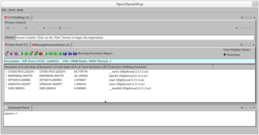
In the image below, the hot call path view for the iop experiment run on a 50000 rank IOR application job is displayed. The performance information in the hot call path view is the top five call paths to each of the I/O functions that took the most time, time spent in I/O functions and the percentage of time spent in each I/O function.

This image shows the min, max, average time spent in each of the I/O functions showing the rank of the minimum value and the rank of the maximum value for each of the I/O functions. This view indicates if there is an imbalance relative to the I/O in the application being run. This may or may not be expected.
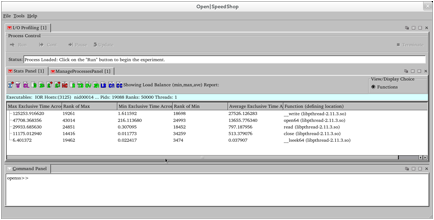
7.4.3 I/O Profiling (iop) experiment performance data viewing with CLI
To launch the CLI on any experiment, use "openss -cli -f <database name>".
The command line interface (CLI) can provide the same data options as the graphical user interface (GUI) views. Here are some examples of the performance data that can be viewed and the commands in order to generate the CLI views.
> openss
-cli -f IOR-iop-1.openss
openss>>[openss]:
The restored experiment identifier is: -x 1
openss>>expview
Exclusive
Inclusive
% of Function
(defining location)
I/O
call I/O call
Total
times
in times in Exclusive
seconds.
seconds. CPU Time
38297.339900
38297.339900 96.460929 __write
(libpthread-2.11.3.so)
741.019727
741.019727 1.866434 open64
(libpthread-2.11.3.so)
598.432332
598.432332 1.507294 read
(libpthread-2.11.3.so)
63.383924
63.383924 0.159647
close (libpthread-2.11.3.so)
2.261454
2.261454 0.005696
__lseek64 (libpthread-2.11.3.so)
openss>>expview -v
calltrees,fullstack
Exclusive
Inclusive
% of Call Stack
Function (defining location)
I/O
call I/O call
Total
times
in times in Exclusive
seconds.
seconds. CPU Time
TestIoSys
(IOR:
IOR.c,1848)
>
@
2608 in WriteOrRead (IOR: IOR.c,2562)
>>
@
244 in IOR_Xfer_POSIX (IOR: aiori-POSIX.c,224)
38297.339900
38297.339900 96.460929 >>>__write
(libpthread-2.11.3.so)
TestIoSys
(IOR:
IOR.c,1848)
>
@
2611 in WriteOrRead (IOR: IOR.c,2562)
>>
@
251 in IOR_Xfer_POSIX (IOR: aiori-POSIX.c,224)
598.432332
598.432332 1.507294
>>>read (libpthread-2.11.3.so)
TestIoSys
(IOR:
IOR.c,1848)
>
@
104 in IOR_Create_POSIX (IOR: aiori-POSIX.c,74)
472.137142
472.137142 1.189189
>>open64 (libpthread-2.11.3.so)
TestIoSys
(IOR:
IOR.c,1848)
>
@
195 in IOR_Open_POSIX (IOR: aiori-POSIX.c,173)
268.882585
268.882585 0.677245
>>open64 (libpthread-2.11.3.so)
TestIoSys
(IOR:
IOR.c,1848)
>
@
316 in IOR_Close_POSIX (IOR: aiori-POSIX.c,315)
61.587482
61.587482 0.155123
>>close (libpthread-2.11.3.so)
TestIoSys
(IOR:
IOR.c,1848)
>
@
316 in IOR_Close_POSIX (IOR: aiori-POSIX.c,315)
1.796442
1.796442 0.004525
>>close (libpthread-2.11.3.so)
TestIoSys
(IOR:
IOR.c,1848)
>
@
2608 in WriteOrRead (IOR: IOR.c,2562)
>>
@
234 in IOR_Xfer_POSIX (IOR: aiori-POSIX.c,224)
1.280113
1.280113 0.003224
>>>__lseek64 (libpthread-2.11.3.so)
TestIoSys
(IOR:
IOR.c,1848)
>
@
2611 in WriteOrRead (IOR: IOR.c,2562)
>>
@
234 in IOR_Xfer_POSIX (IOR: aiori-POSIX.c,224)
0.981341
0.981341 0.002472
>>>__lseek64 (libpthread-2.11.3.so)
In the above command line interface output, the expview command with no options gives the overview or summary view for all the ranks and threads. One can view the performance information for individual ranks (using -r <rank number>) or individual threads (using -t <thread number>) or individual processes (using -p <process id>). One can also give a range of ranks, threads, or processes using their respective option.
For the calltree view, the display is showing where the I/O function were called from in the users application source. In this example, most of I/O time was spent in the write I/O function along the path shown in the first individual calltree. The calltree with fullstack option forces the calltree view to not collapse any similar sub-trees, which makes the view more explicit. Without the fullstack option the calltrees would be more consolidated.
8 Applying
Experiments
to Parallel Codes
The ideal scenario for the execution of parallel code using pthreads or OpenMP is efficient threading, where all threads are assigned work that can execute concurrently. Or for MPI code, the job is properly load balanced so all MPI ranks do the same about of work and no MPI rank is stuck waiting.
What are some things that can cause these ideal scenarios to fail? (taken from LLNL parallel processing tutorial) MPI jobs can become unbalanced if an equal amount of work was not assigned to each rank, possibly through the number of array operations not being equal for each rank or loop iterations not being evenly distributed. You can still have problems even if your work seems to be evenly distributed. For example if you evenly distribute a sparsely populated array then some ranks may end up with very little or no work while others will have a full workload. With adaptive grid models some ranks need to redefine their mesh while other don�t. With N-body simulations some work migrates to other ranks so those ranks will have more to do while the others have less.
Performance analysis can help you with load balancing and an even distribution of work. Tools like Open|SpeedShop are designed to work on parallel jobs. It supports threading and message passing and automatically tracks all ranks and thread during execution. It can also store the performance info per process, rank or thread for individual evaluation. All of the experiments for Open|SpeedShop can be run on parallel jobs, collectors are applied to all ranks on all nodes. The results of an experiment can be displayed as an aggregation across all ranks or threads, which is the default view, or you can select individual or groups of ranks or threads to view. There are also experiments specifically designed for tracing MPI function calls.
Open|SpeedShop has been tested with a variety of MPI versions including Open MPI, MVAPICH[2] and MPICH2 on Intel, Blue Gene, and Cray systems. Open|SpeedShop is able to identify the MPI task (rank info) through the MPIR interface for the online version or through PMPI preload for the offline version. To run MPI code with Open|SpeedShop just include the MPI launcher as part of the executable as normal, below are several examples:
|
>
ossmpi "mpirun
-np 128
sweep3d.mpi" >
osspcsamp "mpirun -np 32 sweep3d.mpi" >
ossio "srun -N 4 -n 16 sweep3d.mpi" >
openss -offline -f "mpirun -np 128 sweep3d.mpi"
hwctime >
openss -online -f "srun -N 8 -n 128 sweep3d.mpi"
usertime |
The default view for parallel applications is to aggregate the information collected across all ranks. You can manually include or exclude individual ranks, processes or threads to view their specific results. You can also compare ranks by using the Customize Stats panel View and creating a compare column for the process groups or individual ranks. Cluster analysis is also available, it can be used to find outliers, ranks that are performing very differently then the others. From the Stats Panel toolbar or context menu you can automatically create groups of similar performing ranks or threads. Through the Stat Panel Open|SpeedShop also provides common analysis functions designed for quick analysis of MPI applications. There are load balance views that calculate min, max and average values across ranks, processes or threads. The image below shows the Open|SpeedShop buttons for Load Balance and next to that Cluster Analysis.

Below we see the creation of a comparison between to ranks in Open|SpeedShop.
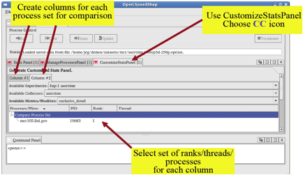
Now we see those to ranks compared side by side in the statistics panel.
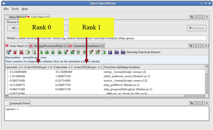
8.1 MPI Tracing Experiment
In this section we will go through an MPI tracing experiment with Open|SpeedShop. The experiment will be similar to the I/O tracing experiment; it will record all MPI call invocations. There are two MPI experiments and associated convenience scripts, ossmpi, which will record call times and ossmpit, which will record call times and arguments. Equal events will be aggregated to save space in the database as well as to reduce the overhead. There is one more MPI experiment that will save the full MPI traces in the Open Trace Format (OTF) with the convenience script ossmpiotf.
Again we will run experiment on the smg2000 application. The syntax for the experiment is:
> ossmpi[t] "srun -N 4 -n 32 smg2000 -n 50 50 50" [default | <list MPI functions> | mpi_category]
The default behavior is to trace all MPI functions, but a comma separated list of MPI functions can be giving if you only want to trace specific functions, e.g. MPI_Send, MPI_Recv,.., etc. You can also select an mpi_category to trace: "all", "asynchronous_p2p", "collective_com", "datatypes", "environment", "graphs_contexts_comms", "persistent_com", "process_topologies", and "synchronous_p2p".
The image below shows the results of the MPI experiment in the default view.
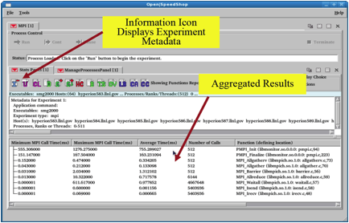
Next we see the MPI function call path view, shown below.

Here is the default pcsamp view based on functions.

Here is the load balance view based on functions.
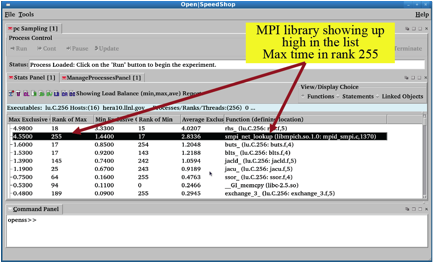
Here is the default view based on Linked Objects (libraries).

Next we see the load balance view base on Linked Objects (libraries).

Here we see the cluster analysis view based on Linked Objects.

Here is the pcsamp view of Rank 255 performance data only.

Below we examine Rank 255 further but this time using the load balance view in the Command Line Interface for Open|SpeedShop.

Here we look at the difference between Rank 255 and Rank 0.
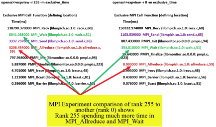
Next we see the hot call paths for MPI_Wait on Rank 255.
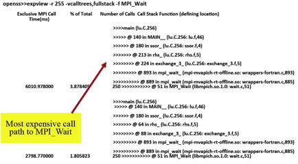
In this experiment we did program counter sampling to get an overview of the application. We noticed that smp_net_lookup showed up in function load balance view, which caused us to take a look at the linked object view. The load balance on the linked object showed some imbalance, so we looked at the cluster analysis view and found that rank 255 was an outlier.
We then took a closer look at rank 255 and saw that the pcsamp output shows most of the time was spent in smp_net_lookup. We used the MPI experiment to determine if we can get more clues and saw that a load balance view on the MPI experiment shows rank 255�s MPI-Allreduce time is the highest of the 256 ranks. We then looked at rank 255 and a representative rank from the rest of the ranks and noted the differences in MPI_Wait, MPI_Send and MPI_Allreduce. We looked at the call paths to MPI_Wait to determine why the wait was occurring.
The mpit experiment has a performance information entry for each MPI function call. In addition to the time spent in each MPI function, information like source and destination rank, bytes sent or received are also available. You can selectively view the information you desire.
Below we see the default event view for an MPI application.

We can create our own event view with the OV button.
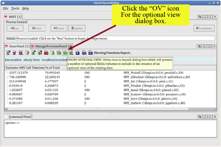
You can use the views dialog box to choose what metric to display.

After choosing the event to view it will then be displayed.
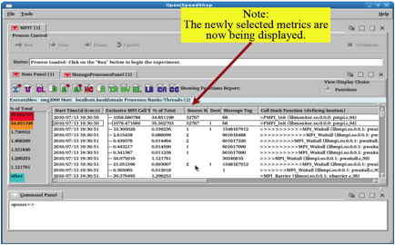
8.1.1 MPI Tracing Experiments performance data gathering
Much of this information is described above in the main MPI Tracing Experiments section, but for completeness, this is the convenience script description for running the MPI specific tracing experments.
> ossmpi[t] "srun -N 4 -n 32 smg2000 -n 50 50 50" [default | <list MPI functions> | mpi_category]
8.1.2 MPI Tracing Experiments performance data viewing with GUI
To launch the GUI on any experiment, use "openss -f <database name>".
8.1.3 MPI Tracing Experiments performance data viewing with CLI
To launch the CLI on any experiment, use "openss -cli -f <database name>".
8.2 Threading Analysis Section
We just did an experiment that uses MPI but we can do a similar analysis on applications that use threads. To analyze a threaded application first we can run the pcsamp experiment to get an overview, then look at the load balance view to detect if there are any widely varying values and finally do cluster analysis to find any outliers.
The image below shows the default view for an application with 4 threads, the information displayed is the aggregated total from all threads.

Next we see the load balance view based on functions.
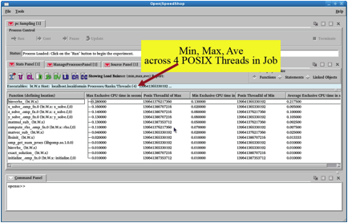
Then we look at a cluster analysis view based on functions.

8.2.1 Threading Specific Experiment (pthreads)
An experiment specific to tracking POSIX thread function calls and analyzing those calls is also available in Open|SpeedShop. The experiment is called pthreads and it traces several POSIX thread related functions. Like all the other tracing experiments, number of calls, time spent in each function, the call paths to each POSIX thread function, and an event-by-event trace is available. Load balance and cluster analysis features are also available.
8.2.1.1 Threading Specific (pthreads) experiment performance data gathering
8.2.1.2 Threading Specific (pthreads) experiment performance data viewing with GUI
To launch the GUI on any experiment, use "openss -f <database name>".
8.2.1.3 Threading Specific (pthreads) experiment performance data viewing with CLI
To launch the CLI on any experiment, use "openss -cli -f <database name>".
8.2 NVIDIA CUDA Analysis Section
The Open|SpeedShop version with CBTF collection mechanisms
supports tracing CUDA events in a NVIDIA CUDA based application. An event by event list
of CUDA events and the event arguments are listed.
8.3.1 NVIDIA CUDA Tracing (cuda) experiment performance data gathering
To run the NVIDIA CUDA experiment, use the osscuda convenience script and specify the CUDA application as an argument. If there are no arguments to the application then no quotes are necessary, but they are placed here for consistency. The osscuda script will run the experiment by running the QTC application and will create an Open|SpeedShop database file with the results of the experiment. Viewing of the performance information can be done with the GUI or CLI.
osscuda "./QTC"
8.3.2 NVIDIA CUDA Tracing (cuda) experiment performance data viewing with GUI
This section shows the default view for the NVIDIA CUDA experiment for the QTC application. Use the following command to open the GUI to see the QTC CUDA experiment performance information.
To launch the GUI on any experiment, use "openss -f <database name>".
openss -f QTC-cuda.openss
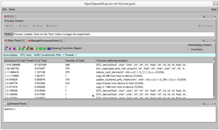
The view below is the statistics panel and source view panel showing the relationship of the statistics to the actual source in the program.

8.3.3 NVIDIA CUDA Tracing (cuda) experiment performance data viewing with CLI
To launch the CLI on any experiment, use "openss -cli -f <database name>".
Here we show a trace view of the output from the osscuda experiment run. Note the -f CUDA is required do to the fact this is a prototype. This restriction will be removed in the future. This trace shows the actions taken during the execution of the CUDA application matmul on the Titan Cray platform at ORNL.
openss>>expview
-v trace -f CUDA
Start
Time(d:h:m:s) Exclusive %
of Call Stack Function (defining location)
I/O
Call
Total
Time(ms)
2013/08/21
18:31:21.611 11.172864 1.061071
>>>>>copy 64 MB from host to device (CUDA)
2013/08/21
18:31:21.622 0.371616 0.035292
>>>>>copy 2.1 MB from host to device (CUDA)
2013/08/21
18:31:21.623 0.004608 0.000438
>>>>>copy 16 KB from host to device (CUDA)
2013/08/21
18:31:21.623 0.003424 0.000325
>>>>set 4 KB on device (CUDA)
2013/08/21
18:31:21.623 0.003392 0.000322
>>>>set 137 KB on device (CUDA)
2013/08/21
18:31:21.623 0.120896 0.011481
>>>>compute_degrees(int*, int*, int,
int)<<<[256,1,1], [64,1,1]>>> (CUDA)
2013/08/21
18:31:21.623 13.018784 1.236375
>>>>QTC_device(float*, char*, char*, int*, int*,
int*, float*, int*, int, int, int, float, int, int, int, int,
bool)<<<[256,1,1], [64,1,1]>>> (CUDA)
2013/08/21
18:31:21.636 0.035232 0.003346
>>>>reduce_card_device(int*,
int)<<<[1,1,1], [1,1,1]>>> (CUDA)
2013/08/21
18:31:21.636 0.002112 0.000201
>>>>>copy 8 bytes from device to host (CUDA)
2013/08/21
18:31:21.636 1.375616 0.130640
>>>>trim_ungrouped_pnts_indr_array(int, int*,
float*, int*, char*, char*, int*, int*, float*, int*, int,
int, int, float, int, bool)<<<[1,1,1],
[64,1,1]>>> (CUDA)
2013/08/21
18:31:21.638 0.001344 0.000128
>>>>>copy 260 bytes from device to host (CUDA)
2013/08/21
18:31:21.638 0.025600 0.002431
>>>>update_clustered_pnts_mask(char*, char*,
int)<<<[1,1,1], [64,1,1]>>> (CUDA)
2013/08/21
18:31:21.638 11.724960 1.113503
>>>>QTC_device(float*, char*, char*, int*, int*,
int*, float*, int*, int, int, int, float, int, int, int, int,
bool)<<<[256,1,1], [64,1,1]>>> (CUDA)
9 Memory Analysis Techniques
The Open|SpeedShop version with CBTF collection mechanisms supports tracing memory allocation and deallocation function calls in user applications. An event-by-event list of memory function call events and the memory function call event arguments are listed. The Open|SpeedShop experiment name for the memory analysis experiment is "mem". The high water memory mark is not currently available but is coming in the future.
9.1 Memory Analysis Tracing (mem) experiment performance data gathering
To run the memory analysis experiment, use the ossmem convenience script and specify the application as an argument. If there are no arguments to the application then no quotes are necessary, but they are placed here for consistency. Using the sweep3d application as an example, here the ossmem script will apply the memory analysis experiment by running the sweep3d application with the Open|SpeedShop memory trace collector, gather the data and will create an Open|SpeedShop database file with the results of the experiment. Viewing of the performance information can be done with the GUI or CLI.
ossmem
"mpirun -np 64 ./sweep3d.mpi"
9.2 Memory Analysis Tracing (mem) experiment performance data viewing with CLI
To launch the CLI on any experiment, use "openss -cli -f <database name>".
Here we show a trace view of the output from the ossmem experiment run. This trace shows the default view and the load balance view for the execution of the sweep3d.mpi application on the Titan Cray platform at ORNL. The example below also contains an expcompare CLI command example where two of the programs ranks are compared against each other. This may be useful if there appears to be load imbalance when examining the -m loadbalance output.
openss -cli
-f sweep3d.mpi-mem-1.openss
openss>>[openss]:
The restored experiment identifier is: -x 1
openss>>expview
Exclusive
% of Number
Function (defining location)
Mem
Call Total
of
Time(ms)
Time
Calls
674.690825
66.448540 1132566 __libc_malloc
(libc-2.11.3.so)
340.667562
33.551460 1127337 __cfree (libc-2.11.3.so)
openss>>expview
-m loadbalance
Max
Rank Min
Rank Average Function (defining
location)
Exclusive
of Exclusive of Exclusive
Mem call Max Mem call Min
Mem call
time
in
time in
time
in
seconds.
seconds.
seconds.
Across
Across
Across
Ranks(ms)
Ranks(ms)
Ranks(ms)
1.798064
33 0.193179 1023
0.658878 __libc_malloc (libc-2.11.3.so)
1.029151
48 0.076400 1001
0.332683 __cfree (libc-2.11.3.so)
openss>>expcompare
-r 33 -r 1023
-r
33, -r 33, % -r 33,
-r 1023, -r 1023,
-r Function (defining
location)
Exclusive
of Total Number Exclusive
% of 1023,
Mem Call
Time
of Mem Call
Total Number
Time(ms)
Calls
Time(ms)
Time
of
Calls
1.798064
65.998580 3297 0.193179
65.455562 349 __libc_malloc
(libc-2.11.3.so)
0.926334
34.001420 3292 0.101951
34.544438 346 __cfree
(libc-2.11.3.so)
9.3 Memory Analysis Tracing (mem) experiment performance data viewing with GUI
To launch the GUI on any experiment, use "openss -f <database name>".
The first GUI view show below is the default view for the mem experiment. It shows the memory functions that were called in the application, how many times they were called, the time spent in each of the memory functions, and the percentage of the overall memory function time was spent in each of the memory functions. The paths to each memory, through the source, are available through the call path views.
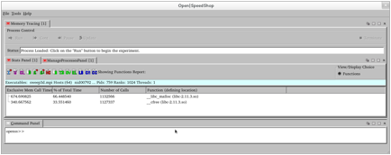
In this (C+ icon) call path view we see the call paths to the memory functions called in this application.
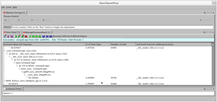
In the view below, one has chosen the "LB" icon and generated the load balance view. This view shows the min, max, and average time across all the ranks in the application. The ranks of the min and max time values are also shown. If there is a significant difference between the min, max, and average time, there may be load imbalance. To identify the ranks, threads, or processes that are acting out of balance, use the cluster analysis feature activated by clicking on the "CA" icon.

In this view, generated by clicking on the "CA" icon, we see that Open|SpeedShop has determined that there are four unique groups where the aggregate time for the groups differs enough to report this to the user. The columns in the Stats Panel display show the times that are reflective of each of the ranks in the group. The information (I+) icon can be used to view which ranks, etc. are included in each of the cluster groups.

10 Advanced
Analysis Techniques
Analyzing the results of a single performance experiment can be useful for debugging and tuning your code. But comparing the results of different experiments can show you how the performance of an application has changed. This is useful if you want to track how the performance varies for each new version of an application, or understanding how a different compiler or compiler options can affect the performance of your application. This also allows you to do scalability tests to see how the performance of your application scales with the number of processors. It�s also helpful just to see the progress you have made while tuning your code.
Open|SpeedShop has options to allow you to compare performance data. You can use the Custom Compare Panel (CC icon) in the GUI or the osscompare convenience script.
> osscompare
"db1.openss, db2.openss,.." [options]
This will produce a side-by-side comparison listing, you can compare up to 8 databases at once. You can see the osscompare man page for more details. Below is an example of comparing two different pcsamp experiments on the smg2000 application.
|
osscompare
"smg2000-pcsamp.openss,smg2000-pcsamp‐1.openss" [openss]:
Legend: ‐c 2 represents smg2000‐pcsamp.openss [openss]:
Legend: -c 4 represents smg2000-‐pcsamp-‐1.openss ‐c
2, Exclusive CPU
‐c 4, Exclusive CPU Function (defining
location) time
in seconds. time
in seconds. 3.870000000
3.630000000
hypre_SMGResidual (smg2000:smg_residual.c,152) 2.610000000
2.860000000
hypre_CyclicReduction (smg2000:cyclic_reduc;on.c,757) 2.030000000
0.150000000
opal_progress (libopen‐pal.so.0.0.0) 1.330000000
0.100000000
mca_btl_sm_component_progress (libmpi.so.0.0.2:
topo_unity_component.c,0) 0.280000000
0.210000000
hypre_SemiInterp (smg2000: semi_interp.c,126) 0.280000000 0.040000000 mca_pml_ob1_progress (libmpi.so.0.0.2: topo_unity_component.c, 0) |
10.1 Comparison Script Argument Description
The Open|SpeedShop comparison script accepts a number of arguments. This section describes the acceptable options for those individual arguments. For a quick overview see section 14.4 osscompare: Compare Database Files. As described above the osscompare script accepts at least two and up to eight comma separated database file names, enclosed in quotes as the mandatory argument. By default the compared metric is the primary metric produced by the experiment. For most experiments, the metric is exclusive time, however the hardware counter experiments use the count of the number of hardware counter overflows as the metric to be compared. These are the default or mandatory arguments to osscompare. The following sections describe the arguments for osscompare in more detail.
10.1.1 osscompare metric argument
The osscompare metric argument specifies the performance information type that Open|SpeedShop will use to compare against when looking at each database file in the compare database file list. To find the metric specifications that are legal and produce comparison outputs, one can open one of the database files with the Open|SpeedShop command line interface (CLI), and list the available metrics.
openss -cli
-f smg2000-pcsamp.openss
openss>>list
-v metrics
pcsamp::percent
pcsamp::threadAverage
pcsamp::threadMax
pcsamp::threadMin
pcsamp::time
You can use the output
of the list metrics command as an argument to the osscompare
command as shown in the examples below.
osscompare
"smg2000-pcsamp.openss,smg2000-pcsamp-1.openss"
osscompare
"smg2000-pcsamp.openss,smg2000-pcsamp-1.openss" percent
osscompare
"smg2000-pcsamp.openss,smg2000-pcsamp-1.openss" threadMin
osscompare
"smg2000-pcsamp.openss,smg2000-pcsamp-1.openss" threadMax
Some exceptions do
apply. For
example, some experiments such as usertime and hwctime have
"details" type metrics output by the list metrics CLI command
(list -v metrics). These
will not work as a metric argument to osscompare.
For the hardware
counter experiments: hwc and hwctime, you can use the actual
PAPI event name in addition to the metric names output from
the list metric command.
The example database file was generated using the
PAPI_TOT_CYC event.
openss -cli -f
smg2000-hwc.openss
openss>>[openss]: The
restored experiment identifier is: -x 1
openss>>list -v metrics
hwc::overflows
hwc::percent
hwc::threadAverage
hwc::threadMax
hwc::threadMin
Here
we show a couple osscompare examples where "hwc::overflows"
can be used interchangeably with PAPI_TOT_CYC.
osscompare
"smg2000-hwc.openss,smg2000-hwc-1.openss" hwc::overflows
osscompare
"smg2000-hwc.openss,smg2000-hwc-1.openss" PAPI_TOT_CYC
10.1.2 osscompare rows of output argument
osscompare allows the
user to specify how many lines of the comparison output to be
output. The
argument is optional and
"rows=nn" is defined
as follows:
"nn"
-
Number of rows/lines of performance data output.
In this example, only ten (10) lines of comparison will be shown when the osscompare command is executed. It will be the most interesting, or top, ten lines.
osscompare
"smg2000-hwc.openss,smg2000-hwc-1.openss" hwc::overflows
rows=10
10.1.3 osscompare output name argument.
osscompare allows the
user to specify the name to be used when writing out the
comparison output files.
The argument is optional and
"oname=<output
file name>" is defined as follows:
"output
file
name" - Name given to the output files
created for the comparison.
This argument is valid when the environment variable OPENSS_CREATE_CSV is set to 1. In this example, the comparison files created when the osscompare command is executed will be named smg_hwc_cmp.csv and/or smg_hwc_cmp.txt.
osscompare "smg2000-pcsamp.openss,smg2000-pcsamp-1.openss" oname=mar2013_pcsamp_cmp
This
example will generate comparison files named using the
specified oname specification.
8 -rw-rw-r--. 1 jeg jeg 4475 Mar 11 15:53 mar2013_pcsamp_cmp.compare.csv
8 -rw-rw-r--. 1 jeg jeg 4841 Mar 11 15:53 mar2013_pcsamp_cmp.compare.txt
10.1.4 osscompare view type or granularity argument.
osscompare allows an
optional view type argument.
It represents the granularity of the view. Open|SpeedShop
allows for viewing performance data at three levels: linked
object level, function level, and at the statement level. osscompare will
produce output at one of those levels based on the view type
argument where:
"viewtype=<functions
|
statements | linkedobjects >" is defined as follows:
"functions"
-
View
type granularity is per function
"statements"
-
View type granularity is per statement
"linkedobjects"
-
View type granularity is per library (linked object)
This example will
produce a side-by-side comparison for the statement level, not
the default function level.
So, this example will compare statement performance
values in each of the two databases and produce a side-by-side
comparison showing how each statement in the application
differed from the two experiments.
osscompare "smg2000-pcsamp.openss,smg2000-pcsamp-1.openss" viewtype=statements
11 Open|SpeedShop
User Interfaces
Throughout this manual we have been using the Open|SpeedShop GUI, we would encourage you to play around with the interface to become familiar with it. The GUI lets you peel-off and rearrange any panel. There are also context sensitive menus so you can right click on any location to access a different view or to activate additional panels.
If you prefer not to use the GUI there are three other options that all have equal functionality. First there is the command line interface that we have also seen throughout this manual, which you can launch with the -cli option:
> openss -cli
There is also the immediate command (batch) interface. This uses the -batch flag:
>
openss -batch < openss_cmd_file
> openss -batch -f <exe> <experiment>
Lastly there is a python scripting API, so you can launch Open|SpeedShop commands within a python script.
> python openss_python_script_file.py
11.1 Command Line Interface Basics
The CLI offers an interactive command line interface with processing like gdb or dbx. There are several interactive commands that allow you to create experiments, provide you with process/thread control or enable you to view experiment results. You can find the full CLI documentation at http://www.openspeedshop.org/doc/cli_doc/ but here we will briefly cover some important points. Here is a quick overview of some commands (those marked with * are only available for the online version):
|
Experiment
Creation �
expcreate �
expattach* |
Result
Presentation �
expview �
opengui |
|
Experiment
Control �
expgo �
expwait* �
expdisable* �
expenable* |
Misc.
Commands �
help �
list �
log �
record �
playback �
history �
quit |
|
Experiment
Storage �
expsave �
exprestore |
The following is a simple example to create, run and view data from an experiment using the CLI.
|
>
openss -cli |
Open
the CLI. |
|
openss>>
expcreate -f "mutatee 2000" pcsamp |
Create
an experiment using pcsamp with this application. |
|
openss>>
expgo |
Run
the experiment and create the database |
|
openss>>
expview |
Display
the default view of the performance data. |
You can also get alternative views of the performance data within the CLI. The following is a list of some options to change the way the information is displayed.
|
help
or help commands |
Display
CLI help text
|
|
expview
|
Show
the default view
for experiment |
|
expview
-v statements |
Show
time-consuming statements
|
|
expview
-v loops |
Show
time-consuming loops |
|
expview
-v linkedobjects |
Show
time spent in libraries
|
|
expview
-v calltrees,fullstack |
See all
unique call paths
in the application. |
|
expview
-m loadbalance |
See
load balance across all the ranks/threads/processes in
the experiment. |
|
expview
-r <rank_num> |
See
data for specific rank(s) |
|
expcompare
-r 1 -r 2 -m time |
Compare
rank 1 to rank 2 for metric equal to "time". Other
metrics are allowed.
This is a usage example. |
|
list
-v metrics |
See the
list of optional performance data metrics.
|
|
list
-v src |
See the
list of source files associated with experiment. |
|
list
-v obj |
See the
list of object files associated with experiment. |
|
list
-v ranks |
See the
list of ranks associated with experiment
. |
|
list
-v hosts |
See
machine host names associated with experiment
. |
|
expview
-m <metric> |
See
performance data for the metric specified
. |
|
expview
-v calltrees,fullstack <experiment type>
<number> |
See
<number> of call paths from the list of
expensive call paths.
|
|
expview
-v calltrees,fullstack usertime2
|
Shows
the top two call paths in execution time.
|
|
expview
<experiment-name><number> |
Shows
<number> of
the functions from the list of the top time-consuming
functions. |
|
expview
pcsamp2 |
Shows
the two functions taking the most time.
|
|
expview
-v statements <experiment-name><number> |
Show
<number> of the statements from the list of the
top time-consuming statements |
Remember if you want the GUI at any time just issue the command opengui in the CLI.
11.1.2 CLI Metric Expressions and Derived Types
Open|SpeedShop
has the capability to create derived metric from the gathered
metrics by using the metric expression math functionality in
the command line interface (CLI). One can
access the overview from the CLI by typing this help CLI
command.
openss>>help
metric_expression
*********
<metric_expression>
::=<string> ( [<constant>
||<metric_expression> ] [ ,
[<constant> ||<metric_expression> ] ]*
)
A user
defined expression that uses metrics to compute a special
value for display in a report.
User
defined expression can be added to an<expMetric_list>.
A
functional notation is used to build the desired expression
and the following, simple, arithmetic operations are
available:
Function
# arguments returns
--------
----------- -------
Uminus()
1 unary minus of the
argument
Abs()
1
Absolute value of the argument
Add()
2
summation of the arguments
Sub()
2
difference of the arguments
Mult()
2 product of the
arguments
Div()
2
first argument divided by second
Mod()
2
remainder of divide operation
Min()
2
minimum of the arguments
Max()
2
maximum of the arguments
A_Add()
1 sum of all the data samples
specified for the view
A_Mult()
1 product of all the data samples
specified for the view
A_Min()
1
minimum of all the data samples specified
for the view
A_Max()
1
maximum of all the data samples specified
for the view
Sqrt()
1 square root of the
argument
Stdev()
3
standard deviation calculation
Percent()
2
percent the first argument is of the second
Condexp()
3 "C" expression: "(first
argument) ? second argument : third argument"
Header()
2
use the first argument as a column header
for the display of the second
Note:
Integer and
floating constants are supported as arguments as are the
metric keywords associated with the experiment view.
Arguments
to these functions can be<metric_expressions>, with the
exception of the first argument of 'Header'.
The first
argument of 'Header' must be a character string that is
preceded with and followed by '\"'.
When the
'-v summary' option is used, it is not generally possible to
produce a meaningful column summary.
A summary
is produced for Add(), Max(), Min(), Percent(), A_Add(), A_Max
and A_Min().
Examples:
expview
hwc -m count,Header(\"percent of
counts\",Percent(count,A_Add(count)) -v summary
expview
mpi -v butterfly -f MPI_Alltoallv -m time,Header("average
time/count",Div(Mult(time,1000),counts))
To examine an example, we take the default view, expview command and add the capability to add the percentage that each function contributes to the total.
Add the header by using the "Header" phrase to create a header for the new data column that is being added. The "Percent" phrase to create the arithmetic expression that divides the PAPI_L1_DCM counts (count) for each function by the total number of PAPI_L1_DCM counts in the application(A_Add(count)).
openss>>expview
-m count,Header(\"percent of
counts\",Percent(count,A_Add(count)))
Exclusive
percent Function (defining location)
PAPI_L1_DCM
of counts
Counts
342000000
52.333588
hypre_SMGResidual (smg2000: smg_residual.c,152)
207500000
31.752104
hypre_CyclicReduction (smg2000: cyclic_reduction.c,757)
20500000
3.136955
hypre_SemiInterp
(smg2000: semi_interp.c,126)
15000000 2.295333
hypre_SemiRestrict
(smg2000: semi_restrict.c,125)
8500000
1.300689
pack_predefined_data
(libmpi.so.0.0.3)
7000000 1.071155
unpack_predefined_data
(libmpi.so.0.0.3)
11.2 CLI Batch Scripting
If you have a known set of command you want to issue you can create a plain text file with CLI commands. For example we create a batch file that will create, run then view the pcsamp experiment run on the application fred.
|
# Create batch file commands > echo expcreate -f fred pcsamp >> input.script > echo expgo >> input.script > echo expview pcsamp10 >> input.script |
Now to run the batch file input.script we use the -batch option to openss.
> openss -batch < input.script
Note that currently, in this context, this interface is only supported via the online version of Open|SpeedShop, so it must have been build with the OPENSS_INSTRUMENTOR=mrnet options.
11.3 Python Scripting
The Open|SpeedShop python API allows users to execute the same interactive/batch commands directly through python. Users can intersperse the normal python code with commands to Open|SpeedShop. Currently this interface is only supported via the online version of Open|SpeedShop.
11.4 MPI_Pcontrol Support
Open|SpeedShop also supports the MPI_Pcontrol function. This feature allows the user to gather performance data only for sections of their code bounded by the MPI_Pcontrol calls. The MPI_Pcontrol must be added to the source code of the application. MPI_Pcontrol(1) enables the gathering of performance data and MPI_Pcontrol(0) disables the gathering. You must also set the Open|SpeedShop environment variable OPENSS_ENABLE_MPI_PCONTROL to 1 in order to activate the MPI_Pcontrol call recognition, otherwise it will be ignored. Optionally you can set the OPENSS_START_ENABLED environment variable to 1 to have performance data gathered until a MPI_Pcontrol(0) call is encountered. If OPENSS_START_ENABLED is no set no performance data will be gathered until a MPI_Pcontrol(1) call is encountered. Note that for OPENSS_START_ENABLED to have any effect OPENSS_ENABLE_MPI_PCONTROL must be set.
11.5 Graphical User Interface Basics
This section gives an overview of the OpenSpeedShop graphical user interface focusing on the basic functionality of the GUI.
To launch the GUI on any experiment, use "openss -f <database name>".
11.5.1
Basic Initial View - Default View
Because this example usertime experiment default view has many of the icons and features of the other Open|SpeedShop experiments it is used here for illustration purposes.
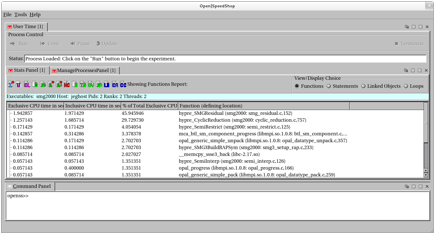
11.5.1.1 Icon ToolBar
The most
used items that can be found in the StatsPanel menu that is
found under the StatsPanel tab are also available in the
StatsPanel ToolBar. The StatsPanel Toolbar is provided
as a convenience. The following is a quick
overview of the toolbar options. The contents of
the toolbar vary by experiment, because some options don't
make sense for all experiments.
The following
table describes the icons and the functionality they
represent.
|
"I" |
Information |
This
option shows the metadata for the experiment.
Information such as the experiment type, processes,
ranks, threads, hosts, and other experiment specific
information is displayed. |
|
"U" |
Update |
This
option updates the information in the StatsPanel
display. This can be used to display any new
data that may have come from the nodes on which the
application is running. |
|
"CL" |
Clear
auxiliary information |
Clear
auxiliary information. If the user has
chosen a time segment of the performance data or a
specific function to view the data for. This
option clears the settings for that and allows the
next view selection to show data for the entire
program again. |
|
"D" |
Default
View |
The
default view icon shows the performance results based
on the view choice granularity selection. |
|
"S,
down arrow" |
Statements
per Function |
Show
the performance results related back to the source
statements in the application for the selected
function. Highlight a function in the StatsPanel
and click on this icon. |
|
"C,
plus sign" |
Call
paths w/o coalescing |
Show
all the calling paths in this application.
Duplicate paths will not be coalesced. All of
the calling paths will be shown in their entirety. |
|
"C,
plus sign, down arrow" |
Call
paths w/o coalescing per Function |
Show
all the calling paths in this application for the
selected function only. Highlight a function in
the StatsPanel and click on this icon. Duplicate
paths will not be coalesced. All of the calling
paths will be shown in their entirety. |
|
"HC" |
Hot
Call Path |
Show
the callpath in the application that took the most
time. This is a short cut to find the "hot" call
path. |
|
"B" |
Butterfly
view |
Show
the butterfly view which displays the callers and
callees of the selected function. Highlight a
function in the StatsPanel and click on this
icon. Then repeat to "drill" down into the
callers and/or callees. |
|
"TS" |
Time
Segment |
Show
a portion of the performance data results based on the
time segment selected. |
|
"OV" |
Optional
View |
Use
this dialog to select which performance metrics to be
shown in the new performance data report. |
|
"SA" |
Source
Annotation |
Choose
which metric to use in the source panel to annotate
the source. Defaults
are different for each experiment, but mostly: time. |
|
"LB" |
Load
Balance |
Show
the load balance view, which displays the min, max,
and average performance values for the
application. Only available on threaded or
multiple process applications. |
|
"CA" |
Cluster
Analysis |
Show
the comparative analysis view which displays the
output of a cluster analysis algorithm run against the
threaded or multiple process performance analysis
results for the user application. The goal of
this view is to find outlying threads or processes and
report the groups of like performing threads,
processes, or ranks. |
|
"CC" |
Custom
Compare |
Raise
the custom comparison panel which provides mechanisms
allowing the user to create custom views of the
performance analysis results. This allows the
user to supplement the provided Open|SpeedShop views. |
11.5.1.2 View/Display Choice Selection
The View/Display Choice set of buttons allows users to choose what granularity to use for a particular display. The normal usage scenario, is to choose a view choice granularity and then select a view by choosing one of the icons described in the table above. The choices, as shown in the image below, are to see the performance data displayed:
� Per Function - Display the performance information relative to each function in the program that had performance data gathered during the experiment that was run.
� Per Statement - Display the performance information relative to each statement in the program that had performance data gathered during the experiment that was run
� Per Linked Object - Display the performance information relative to each library or linked object in the program that had performance data gathered during the experiment that was run.
� Per Loop - Display the performance information relative to each loop in the program that had performance data gathered during the experiment that was run. Note that the loop performance information is only shown for loops that actually were executed. There may be loops in the application that will not show up in the display because they did were not executed or had minimal time attributed to them.
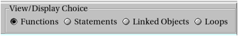
The image below illustrates that double clicking on a line of statistical information in the Stats Panel will focus the source panel at the line of source representing the performance information and annotates the source with that information. Note the hot to cold color highlighting of the source. The higher the performance values are the hotter the color. Red is the hottest color, so source highlighted in red is taking the most time in the program being profiled.

12 Special
System Support
12.1 Cray and Blue Gene
When shared library support is limited the normal manner of running experiments in Open|SpeedShop doesn�t work. You must link the collectors into the static executable. Currently Open|SpeedShop has static support on Cray and the Blue Gene P/Q platforms. You must relink the application with the osslink command to add support for the collectors.
The osslink command is a script that will help with linking. Calls to it are usually embedded inside an application�s makefiles. The user generally needs to fine the target that creates the actual static executable and create a collector target that links in the selected collector. The following is an example for re-linking the smg2000 application.
|
smg2000: smg2000.o @echo "Linking" $@ "... " ${CC} -o smg2000 smg2000.o ${LFLAGS} smg2000-pcsamp: smg2000.o @echo "Linking" $@ "... " osslink -v ‐c pcsamp ${CC} ‐o smg2000-pcsamp smg2000.o ${LFLAGS} smg2000-usertime: smg2000.o @echo "Linking" $@ "... " osslink ‐v ‐c usertime ${CC} -o smg2000-usertime smg2000.o ${LFLAGS} smg2000‐hwcsamp: smg2000.o @echo "Linking" $@ "... " osslink ‐v ‐c hwcsamp ${CC} ‐o smg2000-hwcsamp smg2000.o ${LFLAGS} smg2000-io: smg2000.o @echo "Linking" $@ "... " osslink ‐v ‐c io ${CC} ‐o smg2000‐io smg2000.o ${LFLAGS} smg2000-iot: smg2000.o @echo "Linking" $@ "... " osslink ‐v ‐c iot ${CC} ‐o smg2000‐iot smg2000.o ${LFLAGS} smg2000-mpi: smg2000.o @echo "Linking" $@ "... " osslink ‐v ‐c mpi ${CC} -o smg2000‐mpi smg2000.o ${LFLAGS} |
Running the re-linked executable will cause the application to write the raw data files to the location specified by the environment variable OPENSS_RAWDATA_DIR. Normally, in the cluster environment where shared/dynamic executables are being run, the conversion from raw data to an Open|SpeedShop database is done under the hood. However, in this case you must use the ossutil command to create the database file manually. Of course you can add the ossutil command to a batch script to eliminate the step of manually issuing that command. Once you have the Open|SpeedShop database files create you can view them normally with the GUI or CLI.
Below is an example of a job script that will execute these steps for you.
|
#PBS ‐q debug #PBS ‐N smg2000-pcsamp .. # must have a clean raw data directory each run rm ‐rf /home/USER/smg2000/test/raw mkdir /home/USER/smg2000/test/raw setenv OPENSS_RAWDATA_DIR /home/USER/smg2000/test/raw setenv OPENSS_DB_DIR /home/USER/smg2000/test/ cd /home/jgalaro/smg2000/test # needs -b to have the original executable path available and match where # the application was run when doing ossutil aprun ‐b ‐n 16 /home/USER/smg2000/test/smg2000‐pcsamp # creates a X.0.openss database file, please # load the module pointing to openspeedshop before accessing ossutil ossutil /home/jgalaro/smg2000/test/raw |
OpenSpeedShop needs the executable path that is used to process symbols after the run is complete, to match where the executable was run. The executable path must match the path that is in the raw data that is written to the directory represented by OPENSS_RAWDATA_DIR. If the aprun "-b" option is not used then the executable is run in a temporary system directory and the raw data reflects that directory path for the executable instead of the path where the executable is located when the job is initiated. This will cause ossutil to be unable to resolve the symbols.
There have been recent changes to the shared library support in Open|SpeedShop. Dynamic shared library support is now available in newer Cray and Blue Gene operating systems. There is support for both shared and static binaries on the Cray and on the Blue Gene Q platforms.
Also being worked on is a replacement mechanism for having to re-link the static binaries to insert the Open|SpeedShop collectors into the application. It will use the Dyninst binary rewriter to insert the collectors under the hood. Then you could use the same convenience scripts and interface for all types of applications.
12.1 Cray Specific Static aprun Information
Note, in the above execution of the statically linked executable that we need to add the -b option to the aprun call. The option is needed because Open|SpeedShop stores information about the executable location when it is running. Without the -b option the executable is run in a temporary location that is not available when the raw data information is being converted into the Open|SpeedShop database file.
13 Setup and
Build for Open|SpeedShop
Open|SpeedShop is setup to work with the AMD Opteron or Athlon and the Intel x86, x86-64, and Itanium-2 architectures. It has been tested on many Linux Distributions include SLES, SUSE, RHEL, Fedora Core, CentOS, Debian, Ubuntu and many others. It has been installed on the IBM Blue Gene P/Q and the Cray XT/XE/XK systems. The OpenSpeedShop website contains information on special builds and usage instructions.
The source code for Open|SpeedShop is available for download at the Open|SpeedShop project home on Sourceforge:
http://sourceforge.net/projects/openss
Or CVS access is available at:
http://sourceforge.net/scm/?type=cvs&group_id=176777
Packages and additional information can be found on the Open|SpeedShop website:
13.1 Open|SpeedShop Cluster Install
Open|SpeedShop comes with a set of bash install scripts that will build Open|SpeedShop and any components it needs from source tarballs. First it will check to see if the correct supporting software is installed on your system, if the needed software isn�t installed it will ask to build it for you. The only thing you need to do is provide a few arguments for the install script. For a normal setup you would just specify the directory to install in, what build task you want to do, and the location of your MPI and QT installs. For example:
./install-tool --build-offline --openss-prefix /opt/myoss --with-openmpi /opt/openmpi-1.5.5 -with-mvapich /opt/mvapich-1.1
After the install has successfully completed there are a few important environment variable you need to set. Again set OPENSS_PREFIX for the install location, the OPENSS_PLUGIN_PATH for the directory where the plugins are stored, if you installed with more then one MPI version you must specify which to use with OPENSS_MPI_IMPLEMENATION, lastly add the Open|SpeedShop bin directory to your PATH and lib64 directory to your LD_LIBRARY_PATH. Examples of the necessary environment variables that need to be set are as follows:
|
export OPENSS_PREFIX=/opt/myoss export OPENSS_MPI_IMPLEMENTATION=openmpi export OPENSS_PLUGIN_PATH=$OPENSS_PREFIX/lib64/openspeedshop export LD_LIBRARY_PATH=$OPENSS_PREFIX/lib64:$LD_LIBRARY_PATH export PATH=$OPENSS_PREFIX/bin:$PATH |
13.2 Open|SpeedShop Blue Gene Platform Install
Please reference the OpenSpeedShop 2.1 Build and Install Guide.
13.3 Open|SpeedShop Cray Platform Install
Please reference the OpenSpeedShop 2.1 Build and Install Guide.
13.4 Execution Runtime Environment Setup
This section gives an example of a module file, softenv file and dotkit that can be used to set-up the Open|SpeedShop execution environments.
13.4.1 Example module file
This is an example of a module file used for a cluster installation. Use module load <filename of module file> to activate the Open|SpeedShop runtime environment.
#%Module1.0#####################################################################
## openss modulefile
##
proc ModulesHelp { } {
global version openss
puts stderr "\topenss - loads the OpenSpeedShop
software & application environment"
puts stderr "\n\tThis adds $oss/* to several of the"
puts stderr "\tenvironment variables."
puts stderr "\n\tVersion $version\n"
}
module-whatis "loads the
OpenSpeedShop runtime environment"
# for Tcl script use only
set version
2.1
set oss
/opt/OSS21
setenv
OPENSS_PREFIX
$oss
setenv
OPENSS_DOC_DIR
$oss/share/doc/packages/OpenSpeedShop
prepend-path PATH
$oss/bin
prepend-path MANPATH
$oss/share/man
set unameexe "/bin/uname"
if { [file exists $unameexe]
} {
set
machinetype [ exec /bin/uname -m ]
if {
$machinetype == "x86" ||
$machinetype == "i386" ||
$machinetype == "i486" ||
$machinetype == "i586" ||
$machinetype == "i686" } {
setenv OPENSS_PLUGIN_PATH $oss/lib/openspeedshop
setenv DYNINSTAPI_RT_LIB $oss/lib/libdyninstAPI_RT.so
prepend-path LD_LIBRARY_PATH $oss/lib
}
if {
$machinetype == "x86_64" } {
setenv OPENSS_PLUGIN_PATH $oss/lib64/openspeedshop
setenv DYNINSTAPI_RT_LIB $oss/lib64/libdyninstAPI_RT.so
prepend-path LD_LIBRARY_PATH $oss/lib64
}
if {
$machinetype == "ia64" } {
setenv OPENSS_PLUGIN_PATH $oss/lib/openspeedshop
setenv DYNINSTAPI_RT_LIB $oss/lib/libdyninstAPI_RT.so
prepend-path LD_LIBRARY_PATH $oss/lib
}
}
13.4.2 Example softenv file
This is an example of a softenv file used for a Blue Gene/Q installation. Use the "resoft <filename of softenv file>" command to activate the Open|SpeedShop runtime environment.
# The
OpenSpeedShop .soft file.
# Remember
to type "resoft" after working on this file.
OSS =
/home/projects/oss/oss
TARCH = bgq
# Set up
OSS environment variables
# Find the
executable portions of OpenSpeedShop (order is important here)
PATH +=
$OSS/$TARCH/bin
PATH +=
$OSS/bin
# Find the
libraries for OpenSpeedShop (order is important here)
LD_LIBRARY_PATH
+= $OSS/$TARCH/lib64
LD_LIBRARY_PATH
+= $OSS/lib64
# Find the
runtime collectors
OPENSS_PLUGIN_PATH
= $OSS/$TARCH/lib64/openspeedshop
# Tell the
tool what the application MPI implementation is
# Needed if
supporting multiple implementations and running the "mpi",
"mpit", or "mpiotf" experiments
OPENSS_MPI_IMPLEMENTATION
= mpich2
# Paths to
documentation and man pages
OPENSS_DOC_DIR
= $OSS/share/doc/packages/OpenSpeedShop
MANPATH =
$OSS/share/man
# Use the
basic environment.
@default
13.4.3 Example dotkit file
This is an example of a dotkit file used for a 64-bit cluster platform installation and is not generalized to support different platforms other than the 64-bit cluster it was written for. Use the "use <filename of dotkit file>" command to activate the Open|SpeedShop runtime environment. Note: do not include the ".dk" portion of the filename when using the "use" command.
#c performance/profile
#d Open|Speedshop
(Version 2.1)
dk_setenv OPENSS_PREFIX
/usr/global/tools/openspeedshop/oss-dev/OSS21
dk_setenv OPENSS_PLUGIN_PATH
$OPENSS_PREFIX/lib64/openspeedshop
dk_setenv OPENSS_DOC
$OPENSS_PREFIX/share/doc/packages/OpenSpeedShop/
dk_alter PATH
$OPENSS_PREFIX/bin
dk_alter LD_LIBRARY_PATH
$OPENSS_PREFIX/lib64
dk_setenv DYNINSTAPI_RT_LIB
$OPENSS_PREFIX/lib64/libdyninstAPI_RT.so
dk_setenv XPLAT_RSH rsh
dk_setenv
OPENSS_MPI_IMPLEMENTATION mvapich
dk_test `dk_cev
OPENSS_RAWDATA_DIR` -eq 0 && dk_setenv
OPENSS_RAWDATA_DIR /p/lscratchb/${USER}
14
Additional Information and Documentation Sources
14.1 Final Experiment Overview
In the table below we match up a few general questions you may ask yourself with the experiments you may want to run in order to find the answer.
|
Where
does my code spend most of its time? |
|
�
Flat
profiles (pcsamp) �
Getting
inclusive/exclusive timings with callstacks (usertime) �
Identifying
hot callpaths (usertime + HP analysis) |
|
How
do I analyze cache performance? |
|
�
Measure
memory performance using hardware counters (hwc) �
Compare
to flat profiles (custom comparison) �
Compare
multiple hardware counters (N x hwc, hwcsamp) |
|
How
to identify I/O problems? |
|
�
Study
time spent in I/O routines (io, iot and lightweight
iop) �
Compare
runs under different scenarios (custom comparisons) |
|
How
to identify memory problems? |
|
�
Study
time spent in memory allocation/de-allocation routines
(mem) �
Look
for load imbalance (LB view) and outliers (CA view) |
|
How
do I find parallel inefficiencies in OpenMP and/or
threaded applications? |
|
�
Study
time spent in POSIX thread routines (pthreads) �
Look
for load imbalance (LB view) and outliers (CA view) |
|
How
do I find parallel inefficiencies in MPI applications? |
|
�
Study
time spent in MPI routines (mpi) �
Look
for load imbalance (LB view) and outliers (CA view) |
|
How
do I find parallel inefficiencies in NVIDIA CUDA
applications? |
|
�
Study
time spent in CUDA routines and the CUDA event
execution trace. (cuda) |
14.2 Additional Documentation
The python scripting API documentation can be found at http://www.openspeedshop.org/docs/pyscripting_doc or in the ../share/doc/packages/openspeedshop/pyscripting_doc folder in the install directory.
There are also man pages for openss and every convenience script. There�s also a quick start guide that you can download from http://www.openspeedshop.org
There is also an Open|SpeedShop Forum where you can ask questions and read posts at http://www.openspeedshop.org/forums There is also an email list that you can send your questions to oss-questions@openspeedshop.org
15
Convenience Script Basic Usage Reference Information
This section provides a quick
overview of the convenience scripts that can be used to either
compare experiment data to other experiment data or to gather
performance information for each of the various performance
metric types that Open|SpeedShop supports.
15.1 Suggested Workflow
We recommend an O|SS workflow
consisting
of two phases. First, gathering the performance data using the
convenience scripts. Then using the GUI or CLI to view the
data.
15.2 Convenience Scripts
Users
are encouraged to use the convenience scripts that hide some
of the underlying options for running experiments. The full
command syntax can be found in the User�s Guide. The script
names correspond to the experiment types and are: osspcsamp,
ossusertime,
osshwc, osshwcsamp, osshwctime, ossio, ossiot, ossmpi,
ossmpit, ossmpiotf, ossfpe plus an osscompare script.
Note: Make sure to set OPENSS
RAWDATA DIR (See KEY ENVIRONMENT VARIABLES section for
info). When running Open|SpeedShop, use the same syntax that
is used to run the application/executable outside of O|SS,
but enclosed in quotes; e.g.,
Using an MPI with mpirun: osspcsamp
"mpirun -np 512 ./smg2000"
Using SLURM/srun: osspcsamp
"srun -N 64 -n 512 ./smg2000 -n 5 5 5"
Redirection to/from
files inside quotes can be problematic, see convenience script
"man" pages for more info.
15.3 Report and Database Creation
Running the pcsamp
experiment on the sequential program named mexe: osspcsamp
mexe
results in a default report and the creation of a
SQLite database file mexe-pcsamp.openss in the current
directory; the report:
% CPU Time CPU time Function
48.990 11.650 f3 (mexe: m.c, 24)
33.478 7.960 f2 (mexe: m.c,15)
17.451 4.150 f1 (mexe: m.c,6)
0.084 0.020 work(mexe:m.c,33)
To access alternative views
in the GUI: openss -f mexe-pcsamp.openss loads the
database file. Then use the GUI toolbar to select desired
views; or, using the CLI: openss -cli -f mexe-pcsamp.openss
to load the database file. Then use the expview command
options for desired views.
15.4 osscompare: Compare Database Files
General
form:
osscompare
"<db_file1>,
< db_file2>[,<db_file>...]" [ time | percent |
<other metrics>] [rows=nn] [viewtype=functions|
statements | linkedobjects ] > [ oname = <csv
filename> ]
Where:
"<db_file>" represents
an Open|SpeedShop database file created by running an
Open|SpeedShop experiment on an application.
[ time | percent | <other
metrics>] represent the metric that the comparison will use
to differentiate the performance information for each
experiment database.
[rows=nn] indicates how many
rows of output you want to have listed.
[viewtype=functions|
statements | linkedobjects]
select the granularity of the view output. The comparison is
either done at the function, statement, or library view level. Function level is
the default granularity.
[ oname = <csv
filename> ]
Name
the output filename when comma separated list output is
requested.
Example:
osscompare "smg-run1.openss,smg-run2.openss"
osscompare "smg-run1.openss,smg-run2.openss"
percent rows=10
Please
type "man osscompare" for more details.
15.5 osspcsamp: Program Counter Experiment
General
form:
osspcsamp
"<command> < args>" [ high | low |
default | <sampling rate> ]
Sequential
job example:
osspcsamp "smg2000 -n 50 50 50"
Parallel
job example:
osspcsamp "mpirun -np 128 smg2000 -n
50 50 50"
Additional
arguments:
high: twice the default sampling
rate (samples per second)
low: half the default sampling
rate
default: default sampling rate is
100
<sampling rate>:
integer value sampling rate
15.6 ossusertime: Call Path Experiment
General
form:
ossusertime
"<command> < args>" [ high | low
| default | <sampling rate> ]
Sequential
job example:
ossusertime "smg2000 -n 50 50 50"
Parallel
job example:
ossusertime "mpirun -np 64 smg2000 -n 50
50 50"
Additional
arguments:
high: twice the default sampling
rate (samples per second)
low: half the default sampling
rate
default: default sampling rate is 35
<sampling rate>:
integer value sampling rate
15.7 osshwc, osshwctime: HWC Experiments
General
form:
osshwc[time]
"<command> < args>" [ default | <PAPI_event>
| <PAPI threshold> | <PAPI_ event><PAPI
threshold> ]
Sequential
job example:
osshwc[time] "smg2000 -n 50 50 50"
Parallel
job example:
osshwc[time] "mpirun -np 128
smg2000 -n 50 50 50"
Additional
arguments:
default: event (PAPI_TOT_CYC),
threshold (10000)
<PAPI_event>: PAPI
event name
<PAPI threshold>: PAPI
integer threshold
15.8 osshwcsamp: HWC Experiment
General
form:
osshwcsamp
"<command>< args>" [ default |
<PAPI_event_list>| <sampling_rate> ]
Sequential
job example:
osshwcsamp "smg2000 -n 50 50 50"
Parallel
job examples:
osshwcsamp "mpirun -np 128 smg2000 -n
50 50 50"
osshwcsamp "srun -N 32 -n 128
sweep3d.mpi" PAPI_L1_DCM,PAPI_L1_DCA 200
Additional
arguments:
default: events(PAPI_TOT_CYC and
PAPI_FP_OPS), sampling_rate is 100
<PAPI_event_list>:
Comma separated PAPI event list
<sampling_rate>:Integer
value sampling rate
15.9 ossio, ossiot: I/O Experiments
General
form:
ossio[t]
"<command> < args>" [ default |
f_t_list ]
Sequential
job example:
ossio[t] "smg2000 -n 50 50 50"
Parallel
job example:
ossio[t] "mpirun -np 128 smg2000 -n
50 50 50"
Additional
arguments:
default: trace all I/O functions
<
f_t_list>: Comma-separated list of I/O functions to trace,
one or more of the following: close, creat, creat64, dup,
dup2, lseek, lseek64, open, open64, pipe, pread, pread64,
pwrite, pwrite64, read, readv, write, and writev
15.10 ossmpi, ossmpit: MPI Experiments
General
form:
ossmpi[t]
"<mpirun><mpiargs><command><args>" [ default | f_t_list
]
Parallel
job example:
ossmpi[t] "mpirun -np 128 smg2000 -n
50 50 50"
Additional
arguments:
default: trace all MPI functions
<f_t_list>:
Comma-separated list of MPI functions to trace, consisting of
zero or more of: MPI_Allgather, .... MPI_Waitsome
and/or zero or more of the MPI group categories:
MPI Category Argument
|
All MPI Functions Collective Communicators Persistent Communicators Synchronous Point to Point Asynchronous Point to Point Process Topologies Groups Contexts Communicators Environment Datatypes MPI File I/O |
all collective_com persistent_com synchronous_p2p asynchronous_p2p process_topologies graphs_contexts_comms environment datatypes fileio |
15.11 ossfpe: FP Exception Experiment
General
form:
ossfpe "<command>
< args>" [default
| f_t_list ]
Sequential
job example:
ossfpe "smg2000 -n 50 50 50"
Parallel
job example:
ossfpe "mpirun -np 128 smg2000 -n
50 50 50"
Additional
arguments:
default: trace all floating-point
exceptions
<f_t_list>:
Comma-separated list of exceptions to trace, consisting of one
or more of: inexact_result, division_by_zero, underflow,
overflow, invalid_operation
15.12 ossmem: Memory Analysis Experiment
General
form:
ossmem "<command>
< args>" [default
| f_t_list ]
Sequential
job example:
ossmem "smg2000 -n 50 50 50"
Parallel
job example:
ossmem "mpirun -np 128 smg2000 -n
50 50 50"
Additional
arguments:
default: trace all supported memory
functions
<f_t_list>:
Comma-separated list of exceptions to trace, consisting of one
or more of: malloc, free, memalign, posix_mem align,
calloc and realloc
15.13 osspthread: POSIX Thread Analysis Experiment
General
form:
osspthread "<command>
< args>" [default
| f_t_list ]
Sequential
job example:
osspthread "smg2000 -n 50 50 50"
Parallel
job example:
osspthread "mpirun -np 128 smg2000 -n
50 50 50"
Additional
arguments:
default: trace all POSIX thread
functions
<f_t_list>:
Comma-separated list of exceptions to trace, consisting of one
or more of: pthread_create, pthread_mutex_init,
pthread_mutex_destroy, pthread_mutex_lock,
pthread_mutex_trylock, pthread_mutex_unlock,
pthread_cond_init, pthread_cond_destroy,
pthread_cond_signal, pthread_cond_broadcast,
pthread_cond_wait, and pthread_cond_timedwait
15.14 osscuda: NVIDIA CUDA Tracing Experiment
General
form:
osscuda "<command>
< args>"
Sequential
job example:
osscuda "eigenvalues
--matrix-size=4096"
Parallel
job example:
osscuda "mpirun -np 64
-npernode 1 lmp_linux -sf gpu < in.lj"
15.15 Key Environment Variables
|
EXECUTION
RELATED VARIABLES |
DESCRIPTION |
|
OPENSS_RAWDATA_DIR
|
Used
on cluster systems where a /tmp file system is unique
on each node. It specifies the location of a shared
file system path which is required for O|SS to save
the "raw" data files on distributed systems. OPENSS_RAWDATA_DIR="shared
file system path"
Example: export OPENSS_RAWDATA_DIR=/lustre4/fsys/userid |
|
OPENSS_ENABLE_MPI_PCONTROL
|
Activates
the MPI_Pcontrol function recognition, otherwise
MPI_Pcontrol function calls will be ignored by O|SS. |
|
OPENSS_DATABASE_ONLY |
When
running the Open|SpeedShop convenience scripts only
create the database file and do NOT put out the
default report.
Used to reduce the size of the batch file
output files if user is not interested in looking at
the default report. |
|
OPENSS_RAWDATA_ONLY |
When
running the Open|SpeedShop
convenience scripts only gather the performance
information into the OPENSS_RAWDATA_DIR directory,
but do NOT create the database file and do NOT put
out the default report. |
|
OPENSS_DB_DIR
|
Specifies
the path to where O|SS will build the database file.
On a file system without file locking enabled, the
SQLite component cannot create the database file. This
variable is used to specify a path to a file system
with locking enabled for the database file creation.
This usually occurs on lustre file systems that don�t
have locking enabled.
OPENSS_DB_DIR="file system
path"
Example: export OPENSS_DB_DIR=/opt/filesys/userid |
|
OPENSS_MPI_IMPLEMENTATION
|
Specifies
the MPI implementation in use by the application; only
needed for the mpi, mpit, and mpiotf experiments.
These are the currently supported MPI implementations:
openmpi, lampi, mpich, mpich2, mpt, lam, mvapich,
mvapich2. For Cray, IBM, Intel MPI
implementations, use mpich2.
OPENSS_MPI_IMPLEMENTATION="MPI impl.
name"
Example: export OPENSS_MPI_IMPLEMENTATION=openmpi In
most cases, O|SS can auto-detect the MPI in use. |
16 Hybrid
(openMP and MPI) Performance Analysis
For this
example/tutorial we have run Open|SpeedShop convenience script
on the NPB-MZ BT program and created a database file that has
4 ranks each of which has 4 underlying openMP threads.
What this
example intends to show is that you can look at hybrid
performance first at the MPI level and then can look under the
MPI rank to see how the threads are performing. At the
MPI level you can see load balance and outliers, then focus on
a rank and look at load balance and outliers for the
underlying threads. Within
a terminal window we enter:
openss -f bt-mz.B.4-pcsamp-1.openss
to bring up the Open|SpeedShop GUI.
In
the GUI view below, we display the aggregated results for the
application at the statement level granularity. When the default view
first comes up the view is at the function level granularity. To switch to the
statement level select the Statements button in the
View/Display Choice section on the right hand side of the
Stats Panel display and then click the "D" icon for default
view. This
will switch the Stats Panel view to statement level
granularity.
Now
the Stats Panel is displaying the statements that took the
most time in the application run. For this execution of
BT, the statement at line 440 took the most time. By double clicking on
the statement, Open|SpeedShop focuses on the source for that
line of the application source and highlights that
line.
In
the view below, we moved the ManageProcess panel tab to the
lower panel and split the upper panel using the vertical
splitter icon on the far right side of the original upper
panel.
Note:
Left mouse down and hold on the panel tab then slide the panel
you want to move to another location on the Open|SpeedShop GUI
or off onto other parts of your display.
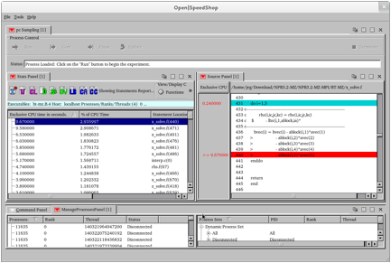
16.1 Focus on individual Rank to get Load Balance for Underlying Threads
In
the next view (below) we used the ManageProcess panel to
highlight one rank and an individual thread within the rank to
show only that threads performance data in the Stats Panel
view.
Note:
Use the focus on threads and processes Manage Process panel
option to focus on individual threads within a
rank. Right mouse button down on the Manage
Process panel tab to see the options.

In
the next GUI view, we used the ManageProcess panel to
highlight one rank to show the performance data from all the
threads that are executed under that particular rank in order
to see only that performance data in the Stats Panel
view.
Note:
Use the "focus on selected rank and underlying threads" Manage
Process panel option to focus on all the threads within a
rank. Right mouse button down on the Manage
Process panel tab to see the options.

16.2 Clearing Focus on individual Rank to get bank to default behavior
Note:
Once you focus on individual or groups of ranks, e.g.
venturing away from the default aggregated views, then you
need to use the "CL" clear auxiliary setting icon to clear
away all the optional selections and get back to looking at
the aggregated results again.
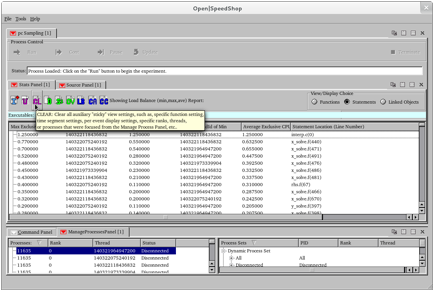
After
clearing the specific rank and/or thread selections, we can
click the "LB" load balance icon and Open|SpeedShop will
display the min, max, average values across all the ranks in
the hybrid code. This helps decide if there is imbalance
across the ranks of the hybrid application. We can
focus on individual ranks to see the balance across the openMP
threads that are in an individual rank (next example image).

Here
we used the Manage Process panel "Focus on selected rank and
underlying threads" menu options to view the load balance
across the 4 openMP threads for the rank 0 process.
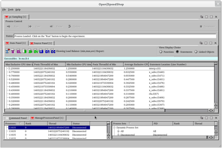
Please
also explore the various options offered via a panel's pull
down menu. Clicking
on a colored downward-facing arrow or using the Stats Panel
icons can access further options. Red icons represent
view options, such as updating the data or clearing the view
options. The "green" icons correspond to different possible
views of the performance data. The "dark blue"
icons correspond to analysis options while the "light blue"
icon corresponds to information about the experiment.
There is context sensitive text that is shown when you hover
over the icons.